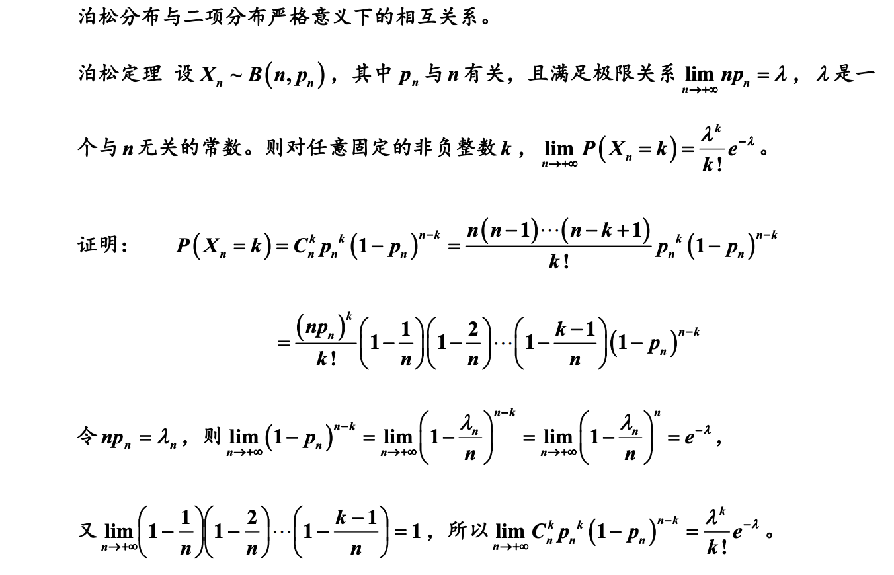

<!DOCTYPE html><html lang="zh-CN" data-theme="light"><head><meta charset="UTF-8"><meta http-equiv="X-UA-Compatible" content="IE=edge"><meta name="viewport" content="width=device-width, initial-scale=1.0, maximum-scale=1.0, user-scalable=no"><title>常见随机变量 | 数据工程师进阶之路</title><meta name="keywords" content="概率论,数学"><meta name="author" content="dizs"><meta name="copyright" content="dizs"><meta name="format-detection" content="telephone=no"><meta name="theme-color" content="#ffffff"><meta name="description" content="伯努利实验 一个随机试验只有“成功”和“失败”两种可能的结果，其中出现“成功”的概率为p(0&lt;p&lt;1)p(0 &lt; p &lt; 1)p(0&lt;p&lt;1)，则称此随机试验为一个参数为ppp的伯努利试验。由参数为ppp的伯努利试验定义一个随机变量XXX， X&#x3D;{1,伯努利实验成功0,否则X &#x3D; \left\{         \begin{aligned}">
<meta property="og:type" content="article">
<meta property="og:title" content="常见随机变量">
<meta property="og:url" content="https://blackdzs.github.io/2022/04/06/%E6%95%B0%E5%AD%A6/%E6%A6%82%E7%8E%87%E8%AE%BA/%E5%B8%B8%E8%A7%81%E9%9A%8F%E6%9C%BA%E5%8F%98%E9%87%8F/index.html">
<meta property="og:site_name" content="数据工程师进阶之路">
<meta property="og:description" content="伯努利实验 一个随机试验只有“成功”和“失败”两种可能的结果，其中出现“成功”的概率为p(0&lt;p&lt;1)p(0 &lt; p &lt; 1)p(0&lt;p&lt;1)，则称此随机试验为一个参数为ppp的伯努利试验。由参数为ppp的伯努利试验定义一个随机变量XXX， X&#x3D;{1,伯努利实验成功0,否则X &#x3D; \left\{         \begin{aligned}">
<meta property="og:locale" content="zh_CN">
<meta property="og:image" content="https://blackdzs.github.io/images/cover/%E5%B8%B8%E8%A7%81%E9%9A%8F%E6%9C%BA%E5%8F%98%E9%87%8F.png">
<meta property="article:published_time" content="2022-04-06T14:23:19.000Z">
<meta property="article:modified_time" content="2022-04-12T15:23:35.901Z">
<meta property="article:author" content="dizs">
<meta property="article:tag" content="概率论">
<meta property="article:tag" content="数学">
<meta name="twitter:card" content="summary">
<meta name="twitter:image" content="https://blackdzs.github.io/images/cover/%E5%B8%B8%E8%A7%81%E9%9A%8F%E6%9C%BA%E5%8F%98%E9%87%8F.png"><link rel="shortcut icon" href="/images/favicon.png"><link rel="canonical" href="https://blackdzs.github.io/2022/04/06/%E6%95%B0%E5%AD%A6/%E6%A6%82%E7%8E%87%E8%AE%BA/%E5%B8%B8%E8%A7%81%E9%9A%8F%E6%9C%BA%E5%8F%98%E9%87%8F/"><link rel="preconnect" href="//cdn.jsdelivr.net"/><link rel="preconnect" href="//busuanzi.ibruce.info"/><meta name="google-site-verification" content="tvekrz6yFhugJH5VxhQKtqb8Y8b_50U3OCHZd1ISU-Q"/><meta name="baidu-site-verification" content="code-y63Ffv7UgX"/><link rel="stylesheet" href="/css/index.css"><link rel="stylesheet" href="https://cdn.jsdelivr.net/npm/@fortawesome/fontawesome-free@6/css/all.min.css" media="print" onload="this.media='all'"><link rel="stylesheet" href="https://cdn.jsdelivr.net/npm/@fancyapps/ui/dist/fancybox.css" media="print" onload="this.media='all'"><script>const GLOBAL_CONFIG = { 
  root: '/',
  algolia: undefined,
  localSearch: {"path":"search.xml","languages":{"hits_empty":"找不到您查询的内容：${query}"}},
  translate: undefined,
  noticeOutdate: undefined,
  highlight: {"plugin":"highlighjs","highlightCopy":true,"highlightLang":true,"highlightHeightLimit":false},
  copy: {
    success: '复制成功',
    error: '复制错误',
    noSupport: '浏览器不支持'
  },
  relativeDate: {
    homepage: false,
    post: false
  },
  runtime: '天',
  date_suffix: {
    just: '刚刚',
    min: '分钟前',
    hour: '小时前',
    day: '天前',
    month: '个月前'
  },
  copyright: undefined,
  lightbox: 'fancybox',
  Snackbar: undefined,
  source: {
    justifiedGallery: {
      js: 'https://cdn.jsdelivr.net/npm/flickr-justified-gallery@2/dist/fjGallery.min.js',
      css: 'https://cdn.jsdelivr.net/npm/flickr-justified-gallery@2/dist/fjGallery.min.css'
    }
  },
  isPhotoFigcaption: false,
  islazyload: false,
  isAnchor: false
}</script><script id="config-diff">var GLOBAL_CONFIG_SITE = {
  title: '常见随机变量',
  isPost: true,
  isHome: false,
  isHighlightShrink: false,
  isToc: true,
  postUpdate: '2022-04-12 23:23:35'
}</script><noscript><style type="text/css">
  #nav {
    opacity: 1
  }
  .justified-gallery img {
    opacity: 1
  }

  #recent-posts time,
  #post-meta time {
    display: inline !important
  }
</style></noscript><script>(win=>{
    win.saveToLocal = {
      set: function setWithExpiry(key, value, ttl) {
        if (ttl === 0) return
        const now = new Date()
        const expiryDay = ttl * 86400000
        const item = {
          value: value,
          expiry: now.getTime() + expiryDay,
        }
        localStorage.setItem(key, JSON.stringify(item))
      },

      get: function getWithExpiry(key) {
        const itemStr = localStorage.getItem(key)

        if (!itemStr) {
          return undefined
        }
        const item = JSON.parse(itemStr)
        const now = new Date()

        if (now.getTime() > item.expiry) {
          localStorage.removeItem(key)
          return undefined
        }
        return item.value
      }
    }
  
    win.getScript = url => new Promise((resolve, reject) => {
      const script = document.createElement('script')
      script.src = url
      script.async = true
      script.onerror = reject
      script.onload = script.onreadystatechange = function() {
        const loadState = this.readyState
        if (loadState && loadState !== 'loaded' && loadState !== 'complete') return
        script.onload = script.onreadystatechange = null
        resolve()
      }
      document.head.appendChild(script)
    })
  
      win.activateDarkMode = function () {
        document.documentElement.setAttribute('data-theme', 'dark')
        if (document.querySelector('meta[name="theme-color"]') !== null) {
          document.querySelector('meta[name="theme-color"]').setAttribute('content', '#0d0d0d')
        }
      }
      win.activateLightMode = function () {
        document.documentElement.setAttribute('data-theme', 'light')
        if (document.querySelector('meta[name="theme-color"]') !== null) {
          document.querySelector('meta[name="theme-color"]').setAttribute('content', '#ffffff')
        }
      }
      const t = saveToLocal.get('theme')
    
          if (t === 'dark') activateDarkMode()
          else if (t === 'light') activateLightMode()
        
      const asideStatus = saveToLocal.get('aside-status')
      if (asideStatus !== undefined) {
        if (asideStatus === 'hide') {
          document.documentElement.classList.add('hide-aside')
        } else {
          document.documentElement.classList.remove('hide-aside')
        }
      }
    
    const detectApple = () => {
      if(/iPad|iPhone|iPod|Macintosh/.test(navigator.userAgent)){
        document.documentElement.classList.add('apple')
      }
    }
    detectApple()
    })(window)</script><meta name="generator" content="Hexo 6.1.0"></head><body><div id="sidebar"><div id="menu-mask"></div><div id="sidebar-menus"><div class="avatar-img is-center"></div><div class="site-data is-center"><div class="data-item"><a href="/archives/"><div class="headline">文章</div><div class="length-num">12</div></a></div><div class="data-item"><a href="/tags/"><div class="headline">标签</div><div class="length-num">9</div></a></div><div class="data-item"><a href="/categories/"><div class="headline">分类</div><div class="length-num">0</div></a></div></div><hr/><div class="menus_items"><div class="menus_item"><a class="site-page" href="/"><i class="fa-fw fas fa-home"></i><span> 主页</span></a></div><div class="menus_item"><a class="site-page" href="/archives/"><i class="fa-fw fas fa-archive"></i><span> 归档</span></a></div><div class="menus_item"><a class="site-page" href="/tags/"><i class="fa-fw fas fa-tags"></i><span> 标签</span></a></div><div class="menus_item"><a class="site-page" href="/categories/"><i class="fa-fw fas fa-folder-open"></i><span> 类别</span></a></div><div class="menus_item"><a class="site-page" href="/link/"><i class="fa-fw fas fa-link"></i><span> 链接</span></a></div><div class="menus_item"><a class="site-page" href="/about/"><i class="fa-fw fas fa-heart"></i><span> 关于</span></a></div></div></div></div><div class="post" id="body-wrap"><header class="post-bg" id="page-header" style="background-image: url('/images/cover/%E5%B8%B8%E8%A7%81%E9%9A%8F%E6%9C%BA%E5%8F%98%E9%87%8F.png')"><nav id="nav"><span id="blog_name"><a id="site-name" href="/">数据工程师进阶之路</a></span><div id="menus"><div id="search-button"><a class="site-page social-icon search"><i class="fas fa-search fa-fw"></i><span> 搜索</span></a></div><div class="menus_items"><div class="menus_item"><a class="site-page" href="/"><i class="fa-fw fas fa-home"></i><span> 主页</span></a></div><div class="menus_item"><a class="site-page" href="/archives/"><i class="fa-fw fas fa-archive"></i><span> 归档</span></a></div><div class="menus_item"><a class="site-page" href="/tags/"><i class="fa-fw fas fa-tags"></i><span> 标签</span></a></div><div class="menus_item"><a class="site-page" href="/categories/"><i class="fa-fw fas fa-folder-open"></i><span> 类别</span></a></div><div class="menus_item"><a class="site-page" href="/link/"><i class="fa-fw fas fa-link"></i><span> 链接</span></a></div><div class="menus_item"><a class="site-page" href="/about/"><i class="fa-fw fas fa-heart"></i><span> 关于</span></a></div></div><div id="toggle-menu"><a class="site-page"><i class="fas fa-bars fa-fw"></i></a></div></div></nav><div id="post-info"><h1 class="post-title">常见随机变量</h1><div id="post-meta"><div class="meta-firstline"><span class="post-meta-date"><i class="far fa-calendar-alt fa-fw post-meta-icon"></i><span class="post-meta-label">发表于</span><time class="post-meta-date-created" datetime="2022-04-06T14:23:19.000Z" title="发表于 2022-04-06 22:23:19">2022-04-06</time><span class="post-meta-separator">|</span><i class="fas fa-history fa-fw post-meta-icon"></i><span class="post-meta-label">更新于</span><time class="post-meta-date-updated" datetime="2022-04-12T15:23:35.901Z" title="更新于 2022-04-12 23:23:35">2022-04-12</time></span></div><div class="meta-secondline"><span class="post-meta-separator">|</span><span class="post-meta-pv-cv" id="" data-flag-title="常见随机变量"><i class="far fa-eye fa-fw post-meta-icon"></i><span class="post-meta-label">阅读量:</span><span id="busuanzi_value_page_pv"></span></span></div></div></div></header><main class="layout" id="content-inner"><div id="post"><article class="post-content" id="article-container"><h2 id="伯努利实验">伯努利实验</h2>
<p>一个随机试验只有“成功”和“失败”两种可能的结果，其中出现“成功”的概率为<span class="katex"><span class="katex-mathml"><math xmlns="http://www.w3.org/1998/Math/MathML"><semantics><mrow><mi>p</mi><mo stretchy="false">(</mo><mn>0</mn><mo>&lt;</mo><mi>p</mi><mo>&lt;</mo><mn>1</mn><mo stretchy="false">)</mo></mrow><annotation encoding="application/x-tex">p(0 &lt; p &lt; 1)</annotation></semantics></math></span><span class="katex-html" aria-hidden="true"><span class="base"><span class="strut" style="height:1em;vertical-align:-0.25em;"></span><span class="mord mathnormal">p</span><span class="mopen">(</span><span class="mord">0</span><span class="mspace" style="margin-right:0.2778em;"></span><span class="mrel">&lt;</span><span class="mspace" style="margin-right:0.2778em;"></span></span><span class="base"><span class="strut" style="height:0.7335em;vertical-align:-0.1944em;"></span><span class="mord mathnormal">p</span><span class="mspace" style="margin-right:0.2778em;"></span><span class="mrel">&lt;</span><span class="mspace" style="margin-right:0.2778em;"></span></span><span class="base"><span class="strut" style="height:1em;vertical-align:-0.25em;"></span><span class="mord">1</span><span class="mclose">)</span></span></span></span>，则称此随机试验为一个参数为<span class="katex"><span class="katex-mathml"><math xmlns="http://www.w3.org/1998/Math/MathML"><semantics><mrow><mi>p</mi></mrow><annotation encoding="application/x-tex">p</annotation></semantics></math></span><span class="katex-html" aria-hidden="true"><span class="base"><span class="strut" style="height:0.625em;vertical-align:-0.1944em;"></span><span class="mord mathnormal">p</span></span></span></span>的<strong>伯努利试验</strong>。由参数为<span class="katex"><span class="katex-mathml"><math xmlns="http://www.w3.org/1998/Math/MathML"><semantics><mrow><mi>p</mi></mrow><annotation encoding="application/x-tex">p</annotation></semantics></math></span><span class="katex-html" aria-hidden="true"><span class="base"><span class="strut" style="height:0.625em;vertical-align:-0.1944em;"></span><span class="mord mathnormal">p</span></span></span></span>的伯努利试验定义一个随机变量<span class="katex"><span class="katex-mathml"><math xmlns="http://www.w3.org/1998/Math/MathML"><semantics><mrow><mi>X</mi></mrow><annotation encoding="application/x-tex">X</annotation></semantics></math></span><span class="katex-html" aria-hidden="true"><span class="base"><span class="strut" style="height:0.6833em;"></span><span class="mord mathnormal" style="margin-right:0.07847em;">X</span></span></span></span>，</p>
<p><span class="katex-display"><span class="katex"><span class="katex-mathml"><math xmlns="http://www.w3.org/1998/Math/MathML" display="block"><semantics><mrow><mi>X</mi><mo>=</mo><mrow><mo fence="true">{</mo><mtable rowspacing="0.25em" columnalign="right left" columnspacing="0em"><mtr><mtd><mstyle scriptlevel="0" displaystyle="true"><mrow><mn>1</mn><mo separator="true">,</mo></mrow></mstyle></mtd><mtd><mstyle scriptlevel="0" displaystyle="true"><mrow><mrow></mrow><mtext>伯努利实验成功</mtext></mrow></mstyle></mtd></mtr><mtr><mtd><mstyle scriptlevel="0" displaystyle="true"><mrow><mn>0</mn><mo separator="true">,</mo></mrow></mstyle></mtd><mtd><mstyle scriptlevel="0" displaystyle="true"><mrow><mrow></mrow><mtext>否则</mtext></mrow></mstyle></mtd></mtr></mtable></mrow></mrow><annotation encoding="application/x-tex">X = \left\{
        \begin{aligned}
            1, &amp; 伯努利实验成功 \\
            0, &amp; 否则
        \end{aligned}
    \right .
</annotation></semantics></math></span><span class="katex-html" aria-hidden="true"><span class="base"><span class="strut" style="height:0.6833em;"></span><span class="mord mathnormal" style="margin-right:0.07847em;">X</span><span class="mspace" style="margin-right:0.2778em;"></span><span class="mrel">=</span><span class="mspace" style="margin-right:0.2778em;"></span></span><span class="base"><span class="strut" style="height:3em;vertical-align:-1.25em;"></span><span class="minner"><span class="mopen delimcenter" style="top:0em;"><span class="delimsizing size4">{</span></span><span class="mord"><span class="mtable"><span class="col-align-r"><span class="vlist-t vlist-t2"><span class="vlist-r"><span class="vlist" style="height:1.75em;"><span style="top:-3.91em;"><span class="pstrut" style="height:3em;"></span><span class="mord"><span class="mord">1</span><span class="mpunct">,</span></span></span><span style="top:-2.41em;"><span class="pstrut" style="height:3em;"></span><span class="mord"><span class="mord">0</span><span class="mpunct">,</span></span></span></span><span class="vlist-s">​</span></span><span class="vlist-r"><span class="vlist" style="height:1.25em;"><span></span></span></span></span></span><span class="col-align-l"><span class="vlist-t vlist-t2"><span class="vlist-r"><span class="vlist" style="height:1.75em;"><span style="top:-3.91em;"><span class="pstrut" style="height:3em;"></span><span class="mord"><span class="mord"></span><span class="mord cjk_fallback">伯努利实验成功</span></span></span><span style="top:-2.41em;"><span class="pstrut" style="height:3em;"></span><span class="mord"><span class="mord"></span><span class="mord cjk_fallback">否则</span></span></span></span><span class="vlist-s">​</span></span><span class="vlist-r"><span class="vlist" style="height:1.25em;"><span></span></span></span></span></span></span></span><span class="mclose nulldelimiter"></span></span></span></span></span></span></p>
<p>则称<span class="katex"><span class="katex-mathml"><math xmlns="http://www.w3.org/1998/Math/MathML"><semantics><mrow><mi>X</mi></mrow><annotation encoding="application/x-tex">X</annotation></semantics></math></span><span class="katex-html" aria-hidden="true"><span class="base"><span class="strut" style="height:0.6833em;"></span><span class="mord mathnormal" style="margin-right:0.07847em;">X</span></span></span></span>是参数为<span class="katex"><span class="katex-mathml"><math xmlns="http://www.w3.org/1998/Math/MathML"><semantics><mrow><mi>p</mi></mrow><annotation encoding="application/x-tex">p</annotation></semantics></math></span><span class="katex-html" aria-hidden="true"><span class="base"><span class="strut" style="height:0.625em;vertical-align:-0.1944em;"></span><span class="mord mathnormal">p</span></span></span></span>的伯努利随机变量，或称<span class="katex"><span class="katex-mathml"><math xmlns="http://www.w3.org/1998/Math/MathML"><semantics><mrow><mi>X</mi></mrow><annotation encoding="application/x-tex">X</annotation></semantics></math></span><span class="katex-html" aria-hidden="true"><span class="base"><span class="strut" style="height:0.6833em;"></span><span class="mord mathnormal" style="margin-right:0.07847em;">X</span></span></span></span>服从参数为<span class="katex"><span class="katex-mathml"><math xmlns="http://www.w3.org/1998/Math/MathML"><semantics><mrow><mi>p</mi></mrow><annotation encoding="application/x-tex">p</annotation></semantics></math></span><span class="katex-html" aria-hidden="true"><span class="base"><span class="strut" style="height:0.625em;vertical-align:-0.1944em;"></span><span class="mord mathnormal">p</span></span></span></span>的伯努利分布</p>
<h2 id="二项分布">二项分布</h2>
<p>将参数为<span class="katex"><span class="katex-mathml"><math xmlns="http://www.w3.org/1998/Math/MathML"><semantics><mrow><mi>p</mi></mrow><annotation encoding="application/x-tex">p</annotation></semantics></math></span><span class="katex-html" aria-hidden="true"><span class="base"><span class="strut" style="height:0.625em;vertical-align:-0.1944em;"></span><span class="mord mathnormal">p</span></span></span></span>的伯努利试验独立地重复<span class="katex"><span class="katex-mathml"><math xmlns="http://www.w3.org/1998/Math/MathML"><semantics><mrow><mi>n</mi></mrow><annotation encoding="application/x-tex">n</annotation></semantics></math></span><span class="katex-html" aria-hidden="true"><span class="base"><span class="strut" style="height:0.4306em;"></span><span class="mord mathnormal">n</span></span></span></span>次，定义随机变量<span class="katex"><span class="katex-mathml"><math xmlns="http://www.w3.org/1998/Math/MathML"><semantics><mrow><mi>X</mi></mrow><annotation encoding="application/x-tex">X</annotation></semantics></math></span><span class="katex-html" aria-hidden="true"><span class="base"><span class="strut" style="height:0.6833em;"></span><span class="mord mathnormal" style="margin-right:0.07847em;">X</span></span></span></span>为试验成功的次数，则 <span class="katex"><span class="katex-mathml"><math xmlns="http://www.w3.org/1998/Math/MathML"><semantics><mrow><mi>X</mi></mrow><annotation encoding="application/x-tex">X</annotation></semantics></math></span><span class="katex-html" aria-hidden="true"><span class="base"><span class="strut" style="height:0.6833em;"></span><span class="mord mathnormal" style="margin-right:0.07847em;">X</span></span></span></span>的分布律为:</p>
<p><span class="katex-display"><span class="katex"><span class="katex-mathml"><math xmlns="http://www.w3.org/1998/Math/MathML" display="block"><semantics><mtable rowspacing="0.16em" columnalign="center center center center center center center" columnlines="solid none none none none none" columnspacing="1em" rowlines="solid"><mtr><mtd><mstyle scriptlevel="0" displaystyle="false"><mi>X</mi></mstyle></mtd><mtd><mstyle scriptlevel="0" displaystyle="false"><mn>0</mn></mstyle></mtd><mtd><mstyle scriptlevel="0" displaystyle="false"><mn>1</mn></mstyle></mtd><mtd><mstyle scriptlevel="0" displaystyle="false"><mrow><mi mathvariant="normal">.</mi><mi mathvariant="normal">.</mi><mi mathvariant="normal">.</mi></mrow></mstyle></mtd><mtd><mstyle scriptlevel="0" displaystyle="false"><mi>k</mi></mstyle></mtd><mtd><mstyle scriptlevel="0" displaystyle="false"><mrow><mi mathvariant="normal">.</mi><mi mathvariant="normal">.</mi><mi mathvariant="normal">.</mi></mrow></mstyle></mtd><mtd><mstyle scriptlevel="0" displaystyle="false"><mi>n</mi></mstyle></mtd></mtr><mtr><mtd><mstyle scriptlevel="0" displaystyle="false"><mi>P</mi></mstyle></mtd><mtd><mstyle scriptlevel="0" displaystyle="false"><msub><mi>p</mi><mn>1</mn></msub></mstyle></mtd><mtd><mstyle scriptlevel="0" displaystyle="false"><msub><mi>p</mi><mn>2</mn></msub></mstyle></mtd><mtd><mstyle scriptlevel="0" displaystyle="false"><mrow><mi mathvariant="normal">.</mi><mi mathvariant="normal">.</mi><mi mathvariant="normal">.</mi></mrow></mstyle></mtd><mtd><mstyle scriptlevel="0" displaystyle="false"><msub><mi>p</mi><mi>k</mi></msub></mstyle></mtd><mtd><mstyle scriptlevel="0" displaystyle="false"><mrow><mi mathvariant="normal">.</mi><mi mathvariant="normal">.</mi><mi mathvariant="normal">.</mi></mrow></mstyle></mtd><mtd><mstyle scriptlevel="0" displaystyle="false"><msub><mi>p</mi><mi>n</mi></msub></mstyle></mtd></mtr></mtable><annotation encoding="application/x-tex">\begin{array}{c|cccccc}
    X &amp; 0 &amp; 1 &amp; ... &amp; k &amp; ... &amp; n\\ \hline
    P &amp; p_1 &amp; p_2 &amp; ... &amp; p_k &amp; ... &amp; p_n\\
\end{array}
</annotation></semantics></math></span><span class="katex-html" aria-hidden="true"><span class="base"><span class="strut" style="height:2.4em;vertical-align:-0.95em;"></span><span class="mord"><span class="vlist-t vlist-t2"><span class="vlist-r"><span class="vlist" style="height:1.45em;"><span style="top:-3.45em;"><span class="pstrut" style="height:3.45em;"></span><span class="mtable"><span class="arraycolsep" style="width:0.5em;"></span><span class="col-align-c"><span class="vlist-t vlist-t2"><span class="vlist-r"><span class="vlist" style="height:1.45em;"><span style="top:-3.61em;"><span class="pstrut" style="height:3em;"></span><span class="mord"><span class="mord mathnormal" style="margin-right:0.07847em;">X</span></span></span><span style="top:-2.41em;"><span class="pstrut" style="height:3em;"></span><span class="mord"><span class="mord mathnormal" style="margin-right:0.13889em;">P</span></span></span></span><span class="vlist-s">​</span></span><span class="vlist-r"><span class="vlist" style="height:0.95em;"><span></span></span></span></span></span><span class="arraycolsep" style="width:0.5em;"></span><span class="vertical-separator" style="height:2.4em;border-right-width:0.04em;border-right-style:solid;margin:0 -0.02em;vertical-align:-0.95em;"></span><span class="arraycolsep" style="width:0.5em;"></span><span class="col-align-c"><span class="vlist-t vlist-t2"><span class="vlist-r"><span class="vlist" style="height:1.45em;"><span style="top:-3.61em;"><span class="pstrut" style="height:3em;"></span><span class="mord"><span class="mord">0</span></span></span><span style="top:-2.41em;"><span class="pstrut" style="height:3em;"></span><span class="mord"><span class="mord"><span class="mord mathnormal">p</span><span class="msupsub"><span class="vlist-t vlist-t2"><span class="vlist-r"><span class="vlist" style="height:0.3011em;"><span style="top:-2.55em;margin-left:0em;margin-right:0.05em;"><span class="pstrut" style="height:2.7em;"></span><span class="sizing reset-size6 size3 mtight"><span class="mord mtight">1</span></span></span></span><span class="vlist-s">​</span></span><span class="vlist-r"><span class="vlist" style="height:0.15em;"><span></span></span></span></span></span></span></span></span></span><span class="vlist-s">​</span></span><span class="vlist-r"><span class="vlist" style="height:0.95em;"><span></span></span></span></span></span><span class="arraycolsep" style="width:0.5em;"></span><span class="arraycolsep" style="width:0.5em;"></span><span class="col-align-c"><span class="vlist-t vlist-t2"><span class="vlist-r"><span class="vlist" style="height:1.45em;"><span style="top:-3.61em;"><span class="pstrut" style="height:3em;"></span><span class="mord"><span class="mord">1</span></span></span><span style="top:-2.41em;"><span class="pstrut" style="height:3em;"></span><span class="mord"><span class="mord"><span class="mord mathnormal">p</span><span class="msupsub"><span class="vlist-t vlist-t2"><span class="vlist-r"><span class="vlist" style="height:0.3011em;"><span style="top:-2.55em;margin-left:0em;margin-right:0.05em;"><span class="pstrut" style="height:2.7em;"></span><span class="sizing reset-size6 size3 mtight"><span class="mord mtight">2</span></span></span></span><span class="vlist-s">​</span></span><span class="vlist-r"><span class="vlist" style="height:0.15em;"><span></span></span></span></span></span></span></span></span></span><span class="vlist-s">​</span></span><span class="vlist-r"><span class="vlist" style="height:0.95em;"><span></span></span></span></span></span><span class="arraycolsep" style="width:0.5em;"></span><span class="arraycolsep" style="width:0.5em;"></span><span class="col-align-c"><span class="vlist-t vlist-t2"><span class="vlist-r"><span class="vlist" style="height:1.45em;"><span style="top:-3.61em;"><span class="pstrut" style="height:3em;"></span><span class="mord"><span class="mord">...</span></span></span><span style="top:-2.41em;"><span class="pstrut" style="height:3em;"></span><span class="mord"><span class="mord">...</span></span></span></span><span class="vlist-s">​</span></span><span class="vlist-r"><span class="vlist" style="height:0.95em;"><span></span></span></span></span></span><span class="arraycolsep" style="width:0.5em;"></span><span class="arraycolsep" style="width:0.5em;"></span><span class="col-align-c"><span class="vlist-t vlist-t2"><span class="vlist-r"><span class="vlist" style="height:1.45em;"><span style="top:-3.61em;"><span class="pstrut" style="height:3em;"></span><span class="mord"><span class="mord mathnormal" style="margin-right:0.03148em;">k</span></span></span><span style="top:-2.41em;"><span class="pstrut" style="height:3em;"></span><span class="mord"><span class="mord"><span class="mord mathnormal">p</span><span class="msupsub"><span class="vlist-t vlist-t2"><span class="vlist-r"><span class="vlist" style="height:0.3361em;"><span style="top:-2.55em;margin-left:0em;margin-right:0.05em;"><span class="pstrut" style="height:2.7em;"></span><span class="sizing reset-size6 size3 mtight"><span class="mord mathnormal mtight" style="margin-right:0.03148em;">k</span></span></span></span><span class="vlist-s">​</span></span><span class="vlist-r"><span class="vlist" style="height:0.15em;"><span></span></span></span></span></span></span></span></span></span><span class="vlist-s">​</span></span><span class="vlist-r"><span class="vlist" style="height:0.95em;"><span></span></span></span></span></span><span class="arraycolsep" style="width:0.5em;"></span><span class="arraycolsep" style="width:0.5em;"></span><span class="col-align-c"><span class="vlist-t vlist-t2"><span class="vlist-r"><span class="vlist" style="height:1.45em;"><span style="top:-3.61em;"><span class="pstrut" style="height:3em;"></span><span class="mord"><span class="mord">...</span></span></span><span style="top:-2.41em;"><span class="pstrut" style="height:3em;"></span><span class="mord"><span class="mord">...</span></span></span></span><span class="vlist-s">​</span></span><span class="vlist-r"><span class="vlist" style="height:0.95em;"><span></span></span></span></span></span><span class="arraycolsep" style="width:0.5em;"></span><span class="arraycolsep" style="width:0.5em;"></span><span class="col-align-c"><span class="vlist-t vlist-t2"><span class="vlist-r"><span class="vlist" style="height:1.45em;"><span style="top:-3.61em;"><span class="pstrut" style="height:3em;"></span><span class="mord"><span class="mord mathnormal">n</span></span></span><span style="top:-2.41em;"><span class="pstrut" style="height:3em;"></span><span class="mord"><span class="mord"><span class="mord mathnormal">p</span><span class="msupsub"><span class="vlist-t vlist-t2"><span class="vlist-r"><span class="vlist" style="height:0.1514em;"><span style="top:-2.55em;margin-left:0em;margin-right:0.05em;"><span class="pstrut" style="height:2.7em;"></span><span class="sizing reset-size6 size3 mtight"><span class="mord mathnormal mtight">n</span></span></span></span><span class="vlist-s">​</span></span><span class="vlist-r"><span class="vlist" style="height:0.15em;"><span></span></span></span></span></span></span></span></span></span><span class="vlist-s">​</span></span><span class="vlist-r"><span class="vlist" style="height:0.95em;"><span></span></span></span></span></span><span class="arraycolsep" style="width:0.5em;"></span></span></span><span style="top:-3.7em;"><span class="pstrut" style="height:3.45em;"></span><span class="hline" style="border-bottom-width:0.04em;"></span></span></span><span class="vlist-s">​</span></span><span class="vlist-r"><span class="vlist" style="height:0.95em;"><span></span></span></span></span></span></span></span></span></span></p>
<p>其中<span class="katex"><span class="katex-mathml"><math xmlns="http://www.w3.org/1998/Math/MathML"><semantics><mrow><msub><mi>p</mi><mi>k</mi></msub><mo>=</mo><mi>P</mi><mo stretchy="false">(</mo><mi>X</mi><mo>=</mo><mi>k</mi><mo stretchy="false">)</mo><mo>=</mo><msubsup><mi mathvariant="normal">C</mi><mi>n</mi><mi>k</mi></msubsup><msup><mi>p</mi><mi>k</mi></msup><mo stretchy="false">(</mo><mn>1</mn><mo>−</mo><mi>p</mi><msup><mo stretchy="false">)</mo><mrow><mi>n</mi><mo>−</mo><mi>k</mi></mrow></msup><mo separator="true">,</mo><mi>k</mi><mo>=</mo><mn>0</mn><mo separator="true">,</mo><mn>1</mn><mo separator="true">,</mo><mi mathvariant="normal">.</mi><mi mathvariant="normal">.</mi><mi mathvariant="normal">.</mi><mo separator="true">,</mo><mi>n</mi></mrow><annotation encoding="application/x-tex">p_k = P(X = k) = \mathrm{C}_{n}^{k}p^k (1-p)^{n-k}, k=0, 1, ..., n</annotation></semantics></math></span><span class="katex-html" aria-hidden="true"><span class="base"><span class="strut" style="height:0.625em;vertical-align:-0.1944em;"></span><span class="mord"><span class="mord mathnormal">p</span><span class="msupsub"><span class="vlist-t vlist-t2"><span class="vlist-r"><span class="vlist" style="height:0.3361em;"><span style="top:-2.55em;margin-left:0em;margin-right:0.05em;"><span class="pstrut" style="height:2.7em;"></span><span class="sizing reset-size6 size3 mtight"><span class="mord mathnormal mtight" style="margin-right:0.03148em;">k</span></span></span></span><span class="vlist-s">​</span></span><span class="vlist-r"><span class="vlist" style="height:0.15em;"><span></span></span></span></span></span></span><span class="mspace" style="margin-right:0.2778em;"></span><span class="mrel">=</span><span class="mspace" style="margin-right:0.2778em;"></span></span><span class="base"><span class="strut" style="height:1em;vertical-align:-0.25em;"></span><span class="mord mathnormal" style="margin-right:0.13889em;">P</span><span class="mopen">(</span><span class="mord mathnormal" style="margin-right:0.07847em;">X</span><span class="mspace" style="margin-right:0.2778em;"></span><span class="mrel">=</span><span class="mspace" style="margin-right:0.2778em;"></span></span><span class="base"><span class="strut" style="height:1em;vertical-align:-0.25em;"></span><span class="mord mathnormal" style="margin-right:0.03148em;">k</span><span class="mclose">)</span><span class="mspace" style="margin-right:0.2778em;"></span><span class="mrel">=</span><span class="mspace" style="margin-right:0.2778em;"></span></span><span class="base"><span class="strut" style="height:1.0991em;vertical-align:-0.25em;"></span><span class="mord"><span class="mord mathrm">C</span><span class="msupsub"><span class="vlist-t vlist-t2"><span class="vlist-r"><span class="vlist" style="height:0.8491em;"><span style="top:-2.453em;margin-left:0em;margin-right:0.05em;"><span class="pstrut" style="height:2.7em;"></span><span class="sizing reset-size6 size3 mtight"><span class="mord mtight"><span class="mord mathnormal mtight">n</span></span></span></span><span style="top:-3.063em;margin-right:0.05em;"><span class="pstrut" style="height:2.7em;"></span><span class="sizing reset-size6 size3 mtight"><span class="mord mtight"><span class="mord mathnormal mtight" style="margin-right:0.03148em;">k</span></span></span></span></span><span class="vlist-s">​</span></span><span class="vlist-r"><span class="vlist" style="height:0.247em;"><span></span></span></span></span></span></span><span class="mord"><span class="mord mathnormal">p</span><span class="msupsub"><span class="vlist-t"><span class="vlist-r"><span class="vlist" style="height:0.8491em;"><span style="top:-3.063em;margin-right:0.05em;"><span class="pstrut" style="height:2.7em;"></span><span class="sizing reset-size6 size3 mtight"><span class="mord mathnormal mtight" style="margin-right:0.03148em;">k</span></span></span></span></span></span></span></span><span class="mopen">(</span><span class="mord">1</span><span class="mspace" style="margin-right:0.2222em;"></span><span class="mbin">−</span><span class="mspace" style="margin-right:0.2222em;"></span></span><span class="base"><span class="strut" style="height:1.0991em;vertical-align:-0.25em;"></span><span class="mord mathnormal">p</span><span class="mclose"><span class="mclose">)</span><span class="msupsub"><span class="vlist-t"><span class="vlist-r"><span class="vlist" style="height:0.8491em;"><span style="top:-3.063em;margin-right:0.05em;"><span class="pstrut" style="height:2.7em;"></span><span class="sizing reset-size6 size3 mtight"><span class="mord mtight"><span class="mord mathnormal mtight">n</span><span class="mbin mtight">−</span><span class="mord mathnormal mtight" style="margin-right:0.03148em;">k</span></span></span></span></span></span></span></span></span><span class="mpunct">,</span><span class="mspace" style="margin-right:0.1667em;"></span><span class="mord mathnormal" style="margin-right:0.03148em;">k</span><span class="mspace" style="margin-right:0.2778em;"></span><span class="mrel">=</span><span class="mspace" style="margin-right:0.2778em;"></span></span><span class="base"><span class="strut" style="height:0.8389em;vertical-align:-0.1944em;"></span><span class="mord">0</span><span class="mpunct">,</span><span class="mspace" style="margin-right:0.1667em;"></span><span class="mord">1</span><span class="mpunct">,</span><span class="mspace" style="margin-right:0.1667em;"></span><span class="mord">...</span><span class="mpunct">,</span><span class="mspace" style="margin-right:0.1667em;"></span><span class="mord mathnormal">n</span></span></span></span>。此分布即称为<strong>二项分布</strong>，记为<span class="katex"><span class="katex-mathml"><math xmlns="http://www.w3.org/1998/Math/MathML"><semantics><mrow><mi>X</mi><mo>∼</mo><mi>B</mi><mo stretchy="false">(</mo><mi>n</mi><mo separator="true">,</mo><mi>p</mi><mo stretchy="false">)</mo></mrow><annotation encoding="application/x-tex">X \sim B(n, p)</annotation></semantics></math></span><span class="katex-html" aria-hidden="true"><span class="base"><span class="strut" style="height:0.6833em;"></span><span class="mord mathnormal" style="margin-right:0.07847em;">X</span><span class="mspace" style="margin-right:0.2778em;"></span><span class="mrel">∼</span><span class="mspace" style="margin-right:0.2778em;"></span></span><span class="base"><span class="strut" style="height:1em;vertical-align:-0.25em;"></span><span class="mord mathnormal" style="margin-right:0.05017em;">B</span><span class="mopen">(</span><span class="mord mathnormal">n</span><span class="mpunct">,</span><span class="mspace" style="margin-right:0.1667em;"></span><span class="mord mathnormal">p</span><span class="mclose">)</span></span></span></span>。</p>
<h2 id="负二项分布">负二项分布</h2>
<p>连续不断且独立地重复进行一个参数为<span class="katex"><span class="katex-mathml"><math xmlns="http://www.w3.org/1998/Math/MathML"><semantics><mrow><mi>p</mi></mrow><annotation encoding="application/x-tex">p</annotation></semantics></math></span><span class="katex-html" aria-hidden="true"><span class="base"><span class="strut" style="height:0.625em;vertical-align:-0.1944em;"></span><span class="mord mathnormal">p</span></span></span></span>的伯努利试验，记<span class="katex"><span class="katex-mathml"><math xmlns="http://www.w3.org/1998/Math/MathML"><semantics><mrow><mi>X</mi></mrow><annotation encoding="application/x-tex">X</annotation></semantics></math></span><span class="katex-html" aria-hidden="true"><span class="base"><span class="strut" style="height:0.6833em;"></span><span class="mord mathnormal" style="margin-right:0.07847em;">X</span></span></span></span>为第<span class="katex"><span class="katex-mathml"><math xmlns="http://www.w3.org/1998/Math/MathML"><semantics><mrow><mi>r</mi></mrow><annotation encoding="application/x-tex">r</annotation></semantics></math></span><span class="katex-html" aria-hidden="true"><span class="base"><span class="strut" style="height:0.4306em;"></span><span class="mord mathnormal" style="margin-right:0.02778em;">r</span></span></span></span>次“成功”出现时<br>
所需的试验次数，则事件<span class="katex"><span class="katex-mathml"><math xmlns="http://www.w3.org/1998/Math/MathML"><semantics><mrow><mi>X</mi><mo>=</mo><mi>k</mi></mrow><annotation encoding="application/x-tex">{X = k}</annotation></semantics></math></span><span class="katex-html" aria-hidden="true"><span class="base"><span class="strut" style="height:0.6944em;"></span><span class="mord"><span class="mord mathnormal" style="margin-right:0.07847em;">X</span><span class="mspace" style="margin-right:0.2778em;"></span><span class="mrel">=</span><span class="mspace" style="margin-right:0.2778em;"></span><span class="mord mathnormal" style="margin-right:0.03148em;">k</span></span></span></span></span>等价于{第<span class="katex"><span class="katex-mathml"><math xmlns="http://www.w3.org/1998/Math/MathML"><semantics><mrow><mi>k</mi></mrow><annotation encoding="application/x-tex">k</annotation></semantics></math></span><span class="katex-html" aria-hidden="true"><span class="base"><span class="strut" style="height:0.6944em;"></span><span class="mord mathnormal" style="margin-right:0.03148em;">k</span></span></span></span>次试验“成功”且前<span class="katex"><span class="katex-mathml"><math xmlns="http://www.w3.org/1998/Math/MathML"><semantics><mrow><mi>k</mi><mo>−</mo><mn>1</mn></mrow><annotation encoding="application/x-tex">k-1</annotation></semantics></math></span><span class="katex-html" aria-hidden="true"><span class="base"><span class="strut" style="height:0.7778em;vertical-align:-0.0833em;"></span><span class="mord mathnormal" style="margin-right:0.03148em;">k</span><span class="mspace" style="margin-right:0.2222em;"></span><span class="mbin">−</span><span class="mspace" style="margin-right:0.2222em;"></span></span><span class="base"><span class="strut" style="height:0.6444em;"></span><span class="mord">1</span></span></span></span>次试验中恰好“成功”<span class="katex"><span class="katex-mathml"><math xmlns="http://www.w3.org/1998/Math/MathML"><semantics><mrow><mi>r</mi><mo>−</mo><mn>1</mn></mrow><annotation encoding="application/x-tex">r-1</annotation></semantics></math></span><span class="katex-html" aria-hidden="true"><span class="base"><span class="strut" style="height:0.6667em;vertical-align:-0.0833em;"></span><span class="mord mathnormal" style="margin-right:0.02778em;">r</span><span class="mspace" style="margin-right:0.2222em;"></span><span class="mbin">−</span><span class="mspace" style="margin-right:0.2222em;"></span></span><span class="base"><span class="strut" style="height:0.6444em;"></span><span class="mord">1</span></span></span></span>次}，故由试验的独立性以及二项分布的性质可得:</p>
<p><span class="katex-display"><span class="katex"><span class="katex-mathml"><math xmlns="http://www.w3.org/1998/Math/MathML" display="block"><semantics><mrow><mi>P</mi><mo stretchy="false">(</mo><mi>X</mi><mo>=</mo><mi>k</mi><mo stretchy="false">)</mo><mo>=</mo><mi>p</mi><mo separator="true">⋅</mo><mi>P</mi><mo stretchy="false">(</mo><mi>B</mi><mo stretchy="false">(</mo><mi>k</mi><mo>−</mo><mn>1</mn><mo separator="true">,</mo><mi>p</mi><mo stretchy="false">)</mo><mo>=</mo><mi>r</mi><mo>−</mo><mn>1</mn><mo stretchy="false">)</mo><mo>=</mo><mi>p</mi><mo separator="true">⋅</mo><msubsup><mi mathvariant="normal">C</mi><mrow><mi>k</mi><mo>−</mo><mn>1</mn></mrow><mrow><mi>r</mi><mo>−</mo><mn>1</mn></mrow></msubsup><msup><mi>p</mi><mrow><mi>r</mi><mo>−</mo><mn>1</mn></mrow></msup><msup><mi>q</mi><mrow><mi>k</mi><mo>−</mo><mn>1</mn><mo>−</mo><mo stretchy="false">(</mo><mi>r</mi><mo>−</mo><mn>1</mn><mo stretchy="false">)</mo></mrow></msup><mo>=</mo><msubsup><mi mathvariant="normal">C</mi><mrow><mi>k</mi><mo>−</mo><mn>1</mn></mrow><mrow><mi>r</mi><mo>−</mo><mn>1</mn></mrow></msubsup><msup><mi>p</mi><mi>r</mi></msup><msup><mi>q</mi><mrow><mi>k</mi><mo>−</mo><mi>r</mi></mrow></msup></mrow><annotation encoding="application/x-tex">P(X=k) = p·P(B(k-1, p)=r-1) = p·\mathrm{C}_{k-1}^{r-1}p^{r-1}q^{k-1-(r-1)} = \mathrm{C}_{k-1}^{r-1}p^rq^{k-r}
</annotation></semantics></math></span><span class="katex-html" aria-hidden="true"><span class="base"><span class="strut" style="height:1em;vertical-align:-0.25em;"></span><span class="mord mathnormal" style="margin-right:0.13889em;">P</span><span class="mopen">(</span><span class="mord mathnormal" style="margin-right:0.07847em;">X</span><span class="mspace" style="margin-right:0.2778em;"></span><span class="mrel">=</span><span class="mspace" style="margin-right:0.2778em;"></span></span><span class="base"><span class="strut" style="height:1em;vertical-align:-0.25em;"></span><span class="mord mathnormal" style="margin-right:0.03148em;">k</span><span class="mclose">)</span><span class="mspace" style="margin-right:0.2778em;"></span><span class="mrel">=</span><span class="mspace" style="margin-right:0.2778em;"></span></span><span class="base"><span class="strut" style="height:1em;vertical-align:-0.25em;"></span><span class="mord mathnormal">p</span><span class="mpunct">⋅</span><span class="mspace" style="margin-right:0.1667em;"></span><span class="mord mathnormal" style="margin-right:0.13889em;">P</span><span class="mopen">(</span><span class="mord mathnormal" style="margin-right:0.05017em;">B</span><span class="mopen">(</span><span class="mord mathnormal" style="margin-right:0.03148em;">k</span><span class="mspace" style="margin-right:0.2222em;"></span><span class="mbin">−</span><span class="mspace" style="margin-right:0.2222em;"></span></span><span class="base"><span class="strut" style="height:1em;vertical-align:-0.25em;"></span><span class="mord">1</span><span class="mpunct">,</span><span class="mspace" style="margin-right:0.1667em;"></span><span class="mord mathnormal">p</span><span class="mclose">)</span><span class="mspace" style="margin-right:0.2778em;"></span><span class="mrel">=</span><span class="mspace" style="margin-right:0.2778em;"></span></span><span class="base"><span class="strut" style="height:0.6667em;vertical-align:-0.0833em;"></span><span class="mord mathnormal" style="margin-right:0.02778em;">r</span><span class="mspace" style="margin-right:0.2222em;"></span><span class="mbin">−</span><span class="mspace" style="margin-right:0.2222em;"></span></span><span class="base"><span class="strut" style="height:1em;vertical-align:-0.25em;"></span><span class="mord">1</span><span class="mclose">)</span><span class="mspace" style="margin-right:0.2778em;"></span><span class="mrel">=</span><span class="mspace" style="margin-right:0.2778em;"></span></span><span class="base"><span class="strut" style="height:1.2878em;vertical-align:-0.3498em;"></span><span class="mord mathnormal">p</span><span class="mpunct">⋅</span><span class="mspace" style="margin-right:0.1667em;"></span><span class="mord"><span class="mord mathrm">C</span><span class="msupsub"><span class="vlist-t vlist-t2"><span class="vlist-r"><span class="vlist" style="height:0.8641em;"><span style="top:-2.4086em;margin-left:0em;margin-right:0.05em;"><span class="pstrut" style="height:2.7em;"></span><span class="sizing reset-size6 size3 mtight"><span class="mord mtight"><span class="mord mathnormal mtight" style="margin-right:0.03148em;">k</span><span class="mbin mtight">−</span><span class="mord mtight">1</span></span></span></span><span style="top:-3.113em;margin-right:0.05em;"><span class="pstrut" style="height:2.7em;"></span><span class="sizing reset-size6 size3 mtight"><span class="mord mtight"><span class="mord mathnormal mtight" style="margin-right:0.02778em;">r</span><span class="mbin mtight">−</span><span class="mord mtight">1</span></span></span></span></span><span class="vlist-s">​</span></span><span class="vlist-r"><span class="vlist" style="height:0.3498em;"><span></span></span></span></span></span></span><span class="mord"><span class="mord mathnormal">p</span><span class="msupsub"><span class="vlist-t"><span class="vlist-r"><span class="vlist" style="height:0.8641em;"><span style="top:-3.113em;margin-right:0.05em;"><span class="pstrut" style="height:2.7em;"></span><span class="sizing reset-size6 size3 mtight"><span class="mord mtight"><span class="mord mathnormal mtight" style="margin-right:0.02778em;">r</span><span class="mbin mtight">−</span><span class="mord mtight">1</span></span></span></span></span></span></span></span></span><span class="mord"><span class="mord mathnormal" style="margin-right:0.03588em;">q</span><span class="msupsub"><span class="vlist-t"><span class="vlist-r"><span class="vlist" style="height:0.938em;"><span style="top:-3.113em;margin-right:0.05em;"><span class="pstrut" style="height:2.7em;"></span><span class="sizing reset-size6 size3 mtight"><span class="mord mtight"><span class="mord mathnormal mtight" style="margin-right:0.03148em;">k</span><span class="mbin mtight">−</span><span class="mord mtight">1</span><span class="mbin mtight">−</span><span class="mopen mtight">(</span><span class="mord mathnormal mtight" style="margin-right:0.02778em;">r</span><span class="mbin mtight">−</span><span class="mord mtight">1</span><span class="mclose mtight">)</span></span></span></span></span></span></span></span></span><span class="mspace" style="margin-right:0.2778em;"></span><span class="mrel">=</span><span class="mspace" style="margin-right:0.2778em;"></span></span><span class="base"><span class="strut" style="height:1.2489em;vertical-align:-0.3498em;"></span><span class="mord"><span class="mord mathrm">C</span><span class="msupsub"><span class="vlist-t vlist-t2"><span class="vlist-r"><span class="vlist" style="height:0.8641em;"><span style="top:-2.4086em;margin-left:0em;margin-right:0.05em;"><span class="pstrut" style="height:2.7em;"></span><span class="sizing reset-size6 size3 mtight"><span class="mord mtight"><span class="mord mathnormal mtight" style="margin-right:0.03148em;">k</span><span class="mbin mtight">−</span><span class="mord mtight">1</span></span></span></span><span style="top:-3.113em;margin-right:0.05em;"><span class="pstrut" style="height:2.7em;"></span><span class="sizing reset-size6 size3 mtight"><span class="mord mtight"><span class="mord mathnormal mtight" style="margin-right:0.02778em;">r</span><span class="mbin mtight">−</span><span class="mord mtight">1</span></span></span></span></span><span class="vlist-s">​</span></span><span class="vlist-r"><span class="vlist" style="height:0.3498em;"><span></span></span></span></span></span></span><span class="mord"><span class="mord mathnormal">p</span><span class="msupsub"><span class="vlist-t"><span class="vlist-r"><span class="vlist" style="height:0.7144em;"><span style="top:-3.113em;margin-right:0.05em;"><span class="pstrut" style="height:2.7em;"></span><span class="sizing reset-size6 size3 mtight"><span class="mord mathnormal mtight" style="margin-right:0.02778em;">r</span></span></span></span></span></span></span></span><span class="mord"><span class="mord mathnormal" style="margin-right:0.03588em;">q</span><span class="msupsub"><span class="vlist-t"><span class="vlist-r"><span class="vlist" style="height:0.8991em;"><span style="top:-3.113em;margin-right:0.05em;"><span class="pstrut" style="height:2.7em;"></span><span class="sizing reset-size6 size3 mtight"><span class="mord mtight"><span class="mord mathnormal mtight" style="margin-right:0.03148em;">k</span><span class="mbin mtight">−</span><span class="mord mathnormal mtight" style="margin-right:0.02778em;">r</span></span></span></span></span></span></span></span></span></span></span></span></span></p>
<p>其中<span class="katex"><span class="katex-mathml"><math xmlns="http://www.w3.org/1998/Math/MathML"><semantics><mrow><mi>q</mi><mo>=</mo><mn>1</mn><mo>−</mo><mi>p</mi><mo separator="true">,</mo><mi>k</mi><mo>=</mo><mi>r</mi><mo separator="true">,</mo><mi>r</mi><mo>+</mo><mn>1</mn><mo separator="true">,</mo><mi mathvariant="normal">.</mi><mi mathvariant="normal">.</mi><mi mathvariant="normal">.</mi></mrow><annotation encoding="application/x-tex">q=1-p, k=r, r+1, ...</annotation></semantics></math></span><span class="katex-html" aria-hidden="true"><span class="base"><span class="strut" style="height:0.625em;vertical-align:-0.1944em;"></span><span class="mord mathnormal" style="margin-right:0.03588em;">q</span><span class="mspace" style="margin-right:0.2778em;"></span><span class="mrel">=</span><span class="mspace" style="margin-right:0.2778em;"></span></span><span class="base"><span class="strut" style="height:0.7278em;vertical-align:-0.0833em;"></span><span class="mord">1</span><span class="mspace" style="margin-right:0.2222em;"></span><span class="mbin">−</span><span class="mspace" style="margin-right:0.2222em;"></span></span><span class="base"><span class="strut" style="height:0.8889em;vertical-align:-0.1944em;"></span><span class="mord mathnormal">p</span><span class="mpunct">,</span><span class="mspace" style="margin-right:0.1667em;"></span><span class="mord mathnormal" style="margin-right:0.03148em;">k</span><span class="mspace" style="margin-right:0.2778em;"></span><span class="mrel">=</span><span class="mspace" style="margin-right:0.2778em;"></span></span><span class="base"><span class="strut" style="height:0.7778em;vertical-align:-0.1944em;"></span><span class="mord mathnormal" style="margin-right:0.02778em;">r</span><span class="mpunct">,</span><span class="mspace" style="margin-right:0.1667em;"></span><span class="mord mathnormal" style="margin-right:0.02778em;">r</span><span class="mspace" style="margin-right:0.2222em;"></span><span class="mbin">+</span><span class="mspace" style="margin-right:0.2222em;"></span></span><span class="base"><span class="strut" style="height:0.8389em;vertical-align:-0.1944em;"></span><span class="mord">1</span><span class="mpunct">,</span><span class="mspace" style="margin-right:0.1667em;"></span><span class="mord">...</span></span></span></span>。</p>
<p>若随机变量<span class="katex"><span class="katex-mathml"><math xmlns="http://www.w3.org/1998/Math/MathML"><semantics><mrow><mi>X</mi></mrow><annotation encoding="application/x-tex">X</annotation></semantics></math></span><span class="katex-html" aria-hidden="true"><span class="base"><span class="strut" style="height:0.6833em;"></span><span class="mord mathnormal" style="margin-right:0.07847em;">X</span></span></span></span>的分布律为:</p>
<p><span class="katex-display"><span class="katex"><span class="katex-mathml"><math xmlns="http://www.w3.org/1998/Math/MathML" display="block"><semantics><mrow><mi>P</mi><mo stretchy="false">(</mo><mi>X</mi><mo>=</mo><mi>k</mi><mo stretchy="false">)</mo><mo>=</mo><msubsup><mi mathvariant="normal">C</mi><mrow><mi>k</mi><mo>−</mo><mn>1</mn></mrow><mrow><mi>r</mi><mo>−</mo><mn>1</mn></mrow></msubsup><msup><mi>p</mi><mi>r</mi></msup><msup><mi>q</mi><mrow><mi>k</mi><mo>−</mo><mi>r</mi></mrow></msup><mo separator="true">,</mo><mi>q</mi><mo>=</mo><mn>1</mn><mo>−</mo><mi>p</mi><mo separator="true">,</mo><mi>k</mi><mo>=</mo><mi>r</mi><mo separator="true">,</mo><mi>r</mi><mo>+</mo><mn>1</mn><mo separator="true">,</mo><mi mathvariant="normal">.</mi><mi mathvariant="normal">.</mi><mi mathvariant="normal">.</mi></mrow><annotation encoding="application/x-tex">P(X=k)=\mathrm{C}_{k-1}^{r-1}p^rq^{k-r}, q = 1 - p, k=r, r+1, ...
</annotation></semantics></math></span><span class="katex-html" aria-hidden="true"><span class="base"><span class="strut" style="height:1em;vertical-align:-0.25em;"></span><span class="mord mathnormal" style="margin-right:0.13889em;">P</span><span class="mopen">(</span><span class="mord mathnormal" style="margin-right:0.07847em;">X</span><span class="mspace" style="margin-right:0.2778em;"></span><span class="mrel">=</span><span class="mspace" style="margin-right:0.2778em;"></span></span><span class="base"><span class="strut" style="height:1em;vertical-align:-0.25em;"></span><span class="mord mathnormal" style="margin-right:0.03148em;">k</span><span class="mclose">)</span><span class="mspace" style="margin-right:0.2778em;"></span><span class="mrel">=</span><span class="mspace" style="margin-right:0.2778em;"></span></span><span class="base"><span class="strut" style="height:1.2489em;vertical-align:-0.3498em;"></span><span class="mord"><span class="mord mathrm">C</span><span class="msupsub"><span class="vlist-t vlist-t2"><span class="vlist-r"><span class="vlist" style="height:0.8641em;"><span style="top:-2.4086em;margin-left:0em;margin-right:0.05em;"><span class="pstrut" style="height:2.7em;"></span><span class="sizing reset-size6 size3 mtight"><span class="mord mtight"><span class="mord mathnormal mtight" style="margin-right:0.03148em;">k</span><span class="mbin mtight">−</span><span class="mord mtight">1</span></span></span></span><span style="top:-3.113em;margin-right:0.05em;"><span class="pstrut" style="height:2.7em;"></span><span class="sizing reset-size6 size3 mtight"><span class="mord mtight"><span class="mord mathnormal mtight" style="margin-right:0.02778em;">r</span><span class="mbin mtight">−</span><span class="mord mtight">1</span></span></span></span></span><span class="vlist-s">​</span></span><span class="vlist-r"><span class="vlist" style="height:0.3498em;"><span></span></span></span></span></span></span><span class="mord"><span class="mord mathnormal">p</span><span class="msupsub"><span class="vlist-t"><span class="vlist-r"><span class="vlist" style="height:0.7144em;"><span style="top:-3.113em;margin-right:0.05em;"><span class="pstrut" style="height:2.7em;"></span><span class="sizing reset-size6 size3 mtight"><span class="mord mathnormal mtight" style="margin-right:0.02778em;">r</span></span></span></span></span></span></span></span><span class="mord"><span class="mord mathnormal" style="margin-right:0.03588em;">q</span><span class="msupsub"><span class="vlist-t"><span class="vlist-r"><span class="vlist" style="height:0.8991em;"><span style="top:-3.113em;margin-right:0.05em;"><span class="pstrut" style="height:2.7em;"></span><span class="sizing reset-size6 size3 mtight"><span class="mord mtight"><span class="mord mathnormal mtight" style="margin-right:0.03148em;">k</span><span class="mbin mtight">−</span><span class="mord mathnormal mtight" style="margin-right:0.02778em;">r</span></span></span></span></span></span></span></span></span><span class="mpunct">,</span><span class="mspace" style="margin-right:0.1667em;"></span><span class="mord mathnormal" style="margin-right:0.03588em;">q</span><span class="mspace" style="margin-right:0.2778em;"></span><span class="mrel">=</span><span class="mspace" style="margin-right:0.2778em;"></span></span><span class="base"><span class="strut" style="height:0.7278em;vertical-align:-0.0833em;"></span><span class="mord">1</span><span class="mspace" style="margin-right:0.2222em;"></span><span class="mbin">−</span><span class="mspace" style="margin-right:0.2222em;"></span></span><span class="base"><span class="strut" style="height:0.8889em;vertical-align:-0.1944em;"></span><span class="mord mathnormal">p</span><span class="mpunct">,</span><span class="mspace" style="margin-right:0.1667em;"></span><span class="mord mathnormal" style="margin-right:0.03148em;">k</span><span class="mspace" style="margin-right:0.2778em;"></span><span class="mrel">=</span><span class="mspace" style="margin-right:0.2778em;"></span></span><span class="base"><span class="strut" style="height:0.7778em;vertical-align:-0.1944em;"></span><span class="mord mathnormal" style="margin-right:0.02778em;">r</span><span class="mpunct">,</span><span class="mspace" style="margin-right:0.1667em;"></span><span class="mord mathnormal" style="margin-right:0.02778em;">r</span><span class="mspace" style="margin-right:0.2222em;"></span><span class="mbin">+</span><span class="mspace" style="margin-right:0.2222em;"></span></span><span class="base"><span class="strut" style="height:0.8389em;vertical-align:-0.1944em;"></span><span class="mord">1</span><span class="mpunct">,</span><span class="mspace" style="margin-right:0.1667em;"></span><span class="mord">...</span></span></span></span></span></p>
<p>则称<span class="katex"><span class="katex-mathml"><math xmlns="http://www.w3.org/1998/Math/MathML"><semantics><mrow><mi>X</mi></mrow><annotation encoding="application/x-tex">X</annotation></semantics></math></span><span class="katex-html" aria-hidden="true"><span class="base"><span class="strut" style="height:0.6833em;"></span><span class="mord mathnormal" style="margin-right:0.07847em;">X</span></span></span></span>服从参数为<span class="katex"><span class="katex-mathml"><math xmlns="http://www.w3.org/1998/Math/MathML"><semantics><mrow><mi>r</mi><mo separator="true">,</mo><mi>p</mi></mrow><annotation encoding="application/x-tex">r, p</annotation></semantics></math></span><span class="katex-html" aria-hidden="true"><span class="base"><span class="strut" style="height:0.625em;vertical-align:-0.1944em;"></span><span class="mord mathnormal" style="margin-right:0.02778em;">r</span><span class="mpunct">,</span><span class="mspace" style="margin-right:0.1667em;"></span><span class="mord mathnormal">p</span></span></span></span>的负二项分布，记为<span class="katex"><span class="katex-mathml"><math xmlns="http://www.w3.org/1998/Math/MathML"><semantics><mrow><mi>X</mi><mo>∼</mo><mi>N</mi><mi>B</mi><mo stretchy="false">(</mo><mi>r</mi><mo separator="true">,</mo><mi>p</mi><mo stretchy="false">)</mo></mrow><annotation encoding="application/x-tex">X \sim NB(r, p)</annotation></semantics></math></span><span class="katex-html" aria-hidden="true"><span class="base"><span class="strut" style="height:0.6833em;"></span><span class="mord mathnormal" style="margin-right:0.07847em;">X</span><span class="mspace" style="margin-right:0.2778em;"></span><span class="mrel">∼</span><span class="mspace" style="margin-right:0.2778em;"></span></span><span class="base"><span class="strut" style="height:1em;vertical-align:-0.25em;"></span><span class="mord mathnormal" style="margin-right:0.05017em;">NB</span><span class="mopen">(</span><span class="mord mathnormal" style="margin-right:0.02778em;">r</span><span class="mpunct">,</span><span class="mspace" style="margin-right:0.1667em;"></span><span class="mord mathnormal">p</span><span class="mclose">)</span></span></span></span></p>
<h2 id="泊松（Poisson）分布">泊松（Poisson）分布</h2>
<p>泊松分布（刻画稀有事件的发生规律）<br>
对给定的常数<span class="katex"><span class="katex-mathml"><math xmlns="http://www.w3.org/1998/Math/MathML"><semantics><mrow><mi>λ</mi><mo>&gt;</mo><mn>0</mn></mrow><annotation encoding="application/x-tex">\lambda &gt; 0</annotation></semantics></math></span><span class="katex-html" aria-hidden="true"><span class="base"><span class="strut" style="height:0.7335em;vertical-align:-0.0391em;"></span><span class="mord mathnormal">λ</span><span class="mspace" style="margin-right:0.2778em;"></span><span class="mrel">&gt;</span><span class="mspace" style="margin-right:0.2778em;"></span></span><span class="base"><span class="strut" style="height:0.6444em;"></span><span class="mord">0</span></span></span></span>，如果随机变量<span class="katex"><span class="katex-mathml"><math xmlns="http://www.w3.org/1998/Math/MathML"><semantics><mrow><mi>X</mi></mrow><annotation encoding="application/x-tex">X</annotation></semantics></math></span><span class="katex-html" aria-hidden="true"><span class="base"><span class="strut" style="height:0.6833em;"></span><span class="mord mathnormal" style="margin-right:0.07847em;">X</span></span></span></span>的分布律为</p>
<p><span class="katex-display"><span class="katex"><span class="katex-mathml"><math xmlns="http://www.w3.org/1998/Math/MathML" display="block"><semantics><mtable rowspacing="0.16em" columnalign="center center center center center center center" columnlines="solid none none none none none" columnspacing="1em" rowlines="solid"><mtr><mtd><mstyle scriptlevel="0" displaystyle="false"><mi>X</mi></mstyle></mtd><mtd><mstyle scriptlevel="0" displaystyle="false"><mn>0</mn></mstyle></mtd><mtd><mstyle scriptlevel="0" displaystyle="false"><mn>1</mn></mstyle></mtd><mtd><mstyle scriptlevel="0" displaystyle="false"><mrow><mi mathvariant="normal">.</mi><mi mathvariant="normal">.</mi><mi mathvariant="normal">.</mi></mrow></mstyle></mtd><mtd><mstyle scriptlevel="0" displaystyle="false"><mi>k</mi></mstyle></mtd><mtd><mstyle scriptlevel="0" displaystyle="false"><mrow><mi mathvariant="normal">.</mi><mi mathvariant="normal">.</mi><mi mathvariant="normal">.</mi></mrow></mstyle></mtd><mtd><mstyle scriptlevel="0" displaystyle="false"><mi>n</mi></mstyle></mtd></mtr><mtr><mtd><mstyle scriptlevel="0" displaystyle="false"><mi>P</mi></mstyle></mtd><mtd><mstyle scriptlevel="0" displaystyle="false"><msub><mi>p</mi><mn>1</mn></msub></mstyle></mtd><mtd><mstyle scriptlevel="0" displaystyle="false"><msub><mi>p</mi><mn>2</mn></msub></mstyle></mtd><mtd><mstyle scriptlevel="0" displaystyle="false"><mrow><mi mathvariant="normal">.</mi><mi mathvariant="normal">.</mi><mi mathvariant="normal">.</mi></mrow></mstyle></mtd><mtd><mstyle scriptlevel="0" displaystyle="false"><msub><mi>p</mi><mi>k</mi></msub></mstyle></mtd><mtd><mstyle scriptlevel="0" displaystyle="false"><mrow><mi mathvariant="normal">.</mi><mi mathvariant="normal">.</mi><mi mathvariant="normal">.</mi></mrow></mstyle></mtd><mtd><mstyle scriptlevel="0" displaystyle="false"><msub><mi>p</mi><mi>n</mi></msub></mstyle></mtd></mtr></mtable><annotation encoding="application/x-tex">\begin{array}{c|cccccc}
    X &amp; 0 &amp; 1 &amp; ... &amp; k &amp; ... &amp; n\\ \hline
    P &amp; p_1 &amp; p_2 &amp; ... &amp; p_k &amp; ... &amp; p_n\\
\end{array}
</annotation></semantics></math></span><span class="katex-html" aria-hidden="true"><span class="base"><span class="strut" style="height:2.4em;vertical-align:-0.95em;"></span><span class="mord"><span class="vlist-t vlist-t2"><span class="vlist-r"><span class="vlist" style="height:1.45em;"><span style="top:-3.45em;"><span class="pstrut" style="height:3.45em;"></span><span class="mtable"><span class="arraycolsep" style="width:0.5em;"></span><span class="col-align-c"><span class="vlist-t vlist-t2"><span class="vlist-r"><span class="vlist" style="height:1.45em;"><span style="top:-3.61em;"><span class="pstrut" style="height:3em;"></span><span class="mord"><span class="mord mathnormal" style="margin-right:0.07847em;">X</span></span></span><span style="top:-2.41em;"><span class="pstrut" style="height:3em;"></span><span class="mord"><span class="mord mathnormal" style="margin-right:0.13889em;">P</span></span></span></span><span class="vlist-s">​</span></span><span class="vlist-r"><span class="vlist" style="height:0.95em;"><span></span></span></span></span></span><span class="arraycolsep" style="width:0.5em;"></span><span class="vertical-separator" style="height:2.4em;border-right-width:0.04em;border-right-style:solid;margin:0 -0.02em;vertical-align:-0.95em;"></span><span class="arraycolsep" style="width:0.5em;"></span><span class="col-align-c"><span class="vlist-t vlist-t2"><span class="vlist-r"><span class="vlist" style="height:1.45em;"><span style="top:-3.61em;"><span class="pstrut" style="height:3em;"></span><span class="mord"><span class="mord">0</span></span></span><span style="top:-2.41em;"><span class="pstrut" style="height:3em;"></span><span class="mord"><span class="mord"><span class="mord mathnormal">p</span><span class="msupsub"><span class="vlist-t vlist-t2"><span class="vlist-r"><span class="vlist" style="height:0.3011em;"><span style="top:-2.55em;margin-left:0em;margin-right:0.05em;"><span class="pstrut" style="height:2.7em;"></span><span class="sizing reset-size6 size3 mtight"><span class="mord mtight">1</span></span></span></span><span class="vlist-s">​</span></span><span class="vlist-r"><span class="vlist" style="height:0.15em;"><span></span></span></span></span></span></span></span></span></span><span class="vlist-s">​</span></span><span class="vlist-r"><span class="vlist" style="height:0.95em;"><span></span></span></span></span></span><span class="arraycolsep" style="width:0.5em;"></span><span class="arraycolsep" style="width:0.5em;"></span><span class="col-align-c"><span class="vlist-t vlist-t2"><span class="vlist-r"><span class="vlist" style="height:1.45em;"><span style="top:-3.61em;"><span class="pstrut" style="height:3em;"></span><span class="mord"><span class="mord">1</span></span></span><span style="top:-2.41em;"><span class="pstrut" style="height:3em;"></span><span class="mord"><span class="mord"><span class="mord mathnormal">p</span><span class="msupsub"><span class="vlist-t vlist-t2"><span class="vlist-r"><span class="vlist" style="height:0.3011em;"><span style="top:-2.55em;margin-left:0em;margin-right:0.05em;"><span class="pstrut" style="height:2.7em;"></span><span class="sizing reset-size6 size3 mtight"><span class="mord mtight">2</span></span></span></span><span class="vlist-s">​</span></span><span class="vlist-r"><span class="vlist" style="height:0.15em;"><span></span></span></span></span></span></span></span></span></span><span class="vlist-s">​</span></span><span class="vlist-r"><span class="vlist" style="height:0.95em;"><span></span></span></span></span></span><span class="arraycolsep" style="width:0.5em;"></span><span class="arraycolsep" style="width:0.5em;"></span><span class="col-align-c"><span class="vlist-t vlist-t2"><span class="vlist-r"><span class="vlist" style="height:1.45em;"><span style="top:-3.61em;"><span class="pstrut" style="height:3em;"></span><span class="mord"><span class="mord">...</span></span></span><span style="top:-2.41em;"><span class="pstrut" style="height:3em;"></span><span class="mord"><span class="mord">...</span></span></span></span><span class="vlist-s">​</span></span><span class="vlist-r"><span class="vlist" style="height:0.95em;"><span></span></span></span></span></span><span class="arraycolsep" style="width:0.5em;"></span><span class="arraycolsep" style="width:0.5em;"></span><span class="col-align-c"><span class="vlist-t vlist-t2"><span class="vlist-r"><span class="vlist" style="height:1.45em;"><span style="top:-3.61em;"><span class="pstrut" style="height:3em;"></span><span class="mord"><span class="mord mathnormal" style="margin-right:0.03148em;">k</span></span></span><span style="top:-2.41em;"><span class="pstrut" style="height:3em;"></span><span class="mord"><span class="mord"><span class="mord mathnormal">p</span><span class="msupsub"><span class="vlist-t vlist-t2"><span class="vlist-r"><span class="vlist" style="height:0.3361em;"><span style="top:-2.55em;margin-left:0em;margin-right:0.05em;"><span class="pstrut" style="height:2.7em;"></span><span class="sizing reset-size6 size3 mtight"><span class="mord mathnormal mtight" style="margin-right:0.03148em;">k</span></span></span></span><span class="vlist-s">​</span></span><span class="vlist-r"><span class="vlist" style="height:0.15em;"><span></span></span></span></span></span></span></span></span></span><span class="vlist-s">​</span></span><span class="vlist-r"><span class="vlist" style="height:0.95em;"><span></span></span></span></span></span><span class="arraycolsep" style="width:0.5em;"></span><span class="arraycolsep" style="width:0.5em;"></span><span class="col-align-c"><span class="vlist-t vlist-t2"><span class="vlist-r"><span class="vlist" style="height:1.45em;"><span style="top:-3.61em;"><span class="pstrut" style="height:3em;"></span><span class="mord"><span class="mord">...</span></span></span><span style="top:-2.41em;"><span class="pstrut" style="height:3em;"></span><span class="mord"><span class="mord">...</span></span></span></span><span class="vlist-s">​</span></span><span class="vlist-r"><span class="vlist" style="height:0.95em;"><span></span></span></span></span></span><span class="arraycolsep" style="width:0.5em;"></span><span class="arraycolsep" style="width:0.5em;"></span><span class="col-align-c"><span class="vlist-t vlist-t2"><span class="vlist-r"><span class="vlist" style="height:1.45em;"><span style="top:-3.61em;"><span class="pstrut" style="height:3em;"></span><span class="mord"><span class="mord mathnormal">n</span></span></span><span style="top:-2.41em;"><span class="pstrut" style="height:3em;"></span><span class="mord"><span class="mord"><span class="mord mathnormal">p</span><span class="msupsub"><span class="vlist-t vlist-t2"><span class="vlist-r"><span class="vlist" style="height:0.1514em;"><span style="top:-2.55em;margin-left:0em;margin-right:0.05em;"><span class="pstrut" style="height:2.7em;"></span><span class="sizing reset-size6 size3 mtight"><span class="mord mathnormal mtight">n</span></span></span></span><span class="vlist-s">​</span></span><span class="vlist-r"><span class="vlist" style="height:0.15em;"><span></span></span></span></span></span></span></span></span></span><span class="vlist-s">​</span></span><span class="vlist-r"><span class="vlist" style="height:0.95em;"><span></span></span></span></span></span><span class="arraycolsep" style="width:0.5em;"></span></span></span><span style="top:-3.7em;"><span class="pstrut" style="height:3.45em;"></span><span class="hline" style="border-bottom-width:0.04em;"></span></span></span><span class="vlist-s">​</span></span><span class="vlist-r"><span class="vlist" style="height:0.95em;"><span></span></span></span></span></span></span></span></span></span></p>
<p>其中<span class="katex"><span class="katex-mathml"><math xmlns="http://www.w3.org/1998/Math/MathML"><semantics><mrow><msub><mi>p</mi><mi>k</mi></msub><mo>=</mo><mi>P</mi><mo stretchy="false">(</mo><mi>X</mi><mo>=</mo><mi>k</mi><mo stretchy="false">)</mo><mo>=</mo><msup><mi>e</mi><mrow><mo>−</mo><mi>λ</mi></mrow></msup><mfrac><msup><mi>λ</mi><mi>k</mi></msup><mrow><mi>k</mi><mo stretchy="false">!</mo></mrow></mfrac><mo separator="true">,</mo><mi>k</mi><mo>=</mo><mn>0</mn><mo separator="true">,</mo><mn>1</mn><mo separator="true">,</mo><mn>2</mn><mo separator="true">,</mo><mi mathvariant="normal">.</mi><mi mathvariant="normal">.</mi><mi mathvariant="normal">.</mi></mrow><annotation encoding="application/x-tex">p_k=P(X = k) = e^{-\lambda}\frac{\lambda^k}{k!}, k=0,1,2,...</annotation></semantics></math></span><span class="katex-html" aria-hidden="true"><span class="base"><span class="strut" style="height:0.625em;vertical-align:-0.1944em;"></span><span class="mord"><span class="mord mathnormal">p</span><span class="msupsub"><span class="vlist-t vlist-t2"><span class="vlist-r"><span class="vlist" style="height:0.3361em;"><span style="top:-2.55em;margin-left:0em;margin-right:0.05em;"><span class="pstrut" style="height:2.7em;"></span><span class="sizing reset-size6 size3 mtight"><span class="mord mathnormal mtight" style="margin-right:0.03148em;">k</span></span></span></span><span class="vlist-s">​</span></span><span class="vlist-r"><span class="vlist" style="height:0.15em;"><span></span></span></span></span></span></span><span class="mspace" style="margin-right:0.2778em;"></span><span class="mrel">=</span><span class="mspace" style="margin-right:0.2778em;"></span></span><span class="base"><span class="strut" style="height:1em;vertical-align:-0.25em;"></span><span class="mord mathnormal" style="margin-right:0.13889em;">P</span><span class="mopen">(</span><span class="mord mathnormal" style="margin-right:0.07847em;">X</span><span class="mspace" style="margin-right:0.2778em;"></span><span class="mrel">=</span><span class="mspace" style="margin-right:0.2778em;"></span></span><span class="base"><span class="strut" style="height:1em;vertical-align:-0.25em;"></span><span class="mord mathnormal" style="margin-right:0.03148em;">k</span><span class="mclose">)</span><span class="mspace" style="margin-right:0.2778em;"></span><span class="mrel">=</span><span class="mspace" style="margin-right:0.2778em;"></span></span><span class="base"><span class="strut" style="height:1.3879em;vertical-align:-0.345em;"></span><span class="mord"><span class="mord mathnormal">e</span><span class="msupsub"><span class="vlist-t"><span class="vlist-r"><span class="vlist" style="height:0.8491em;"><span style="top:-3.063em;margin-right:0.05em;"><span class="pstrut" style="height:2.7em;"></span><span class="sizing reset-size6 size3 mtight"><span class="mord mtight"><span class="mord mtight">−</span><span class="mord mathnormal mtight">λ</span></span></span></span></span></span></span></span></span><span class="mord"><span class="mopen nulldelimiter"></span><span class="mfrac"><span class="vlist-t vlist-t2"><span class="vlist-r"><span class="vlist" style="height:1.0429em;"><span style="top:-2.655em;"><span class="pstrut" style="height:3em;"></span><span class="sizing reset-size6 size3 mtight"><span class="mord mtight"><span class="mord mathnormal mtight" style="margin-right:0.03148em;">k</span><span class="mclose mtight">!</span></span></span></span><span style="top:-3.23em;"><span class="pstrut" style="height:3em;"></span><span class="frac-line" style="border-bottom-width:0.04em;"></span></span><span style="top:-3.394em;"><span class="pstrut" style="height:3em;"></span><span class="sizing reset-size6 size3 mtight"><span class="mord mtight"><span class="mord mtight"><span class="mord mathnormal mtight">λ</span><span class="msupsub"><span class="vlist-t"><span class="vlist-r"><span class="vlist" style="height:0.927em;"><span style="top:-2.931em;margin-right:0.0714em;"><span class="pstrut" style="height:2.5em;"></span><span class="sizing reset-size3 size1 mtight"><span class="mord mathnormal mtight" style="margin-right:0.03148em;">k</span></span></span></span></span></span></span></span></span></span></span></span><span class="vlist-s">​</span></span><span class="vlist-r"><span class="vlist" style="height:0.345em;"><span></span></span></span></span></span><span class="mclose nulldelimiter"></span></span><span class="mpunct">,</span><span class="mspace" style="margin-right:0.1667em;"></span><span class="mord mathnormal" style="margin-right:0.03148em;">k</span><span class="mspace" style="margin-right:0.2778em;"></span><span class="mrel">=</span><span class="mspace" style="margin-right:0.2778em;"></span></span><span class="base"><span class="strut" style="height:0.8389em;vertical-align:-0.1944em;"></span><span class="mord">0</span><span class="mpunct">,</span><span class="mspace" style="margin-right:0.1667em;"></span><span class="mord">1</span><span class="mpunct">,</span><span class="mspace" style="margin-right:0.1667em;"></span><span class="mord">2</span><span class="mpunct">,</span><span class="mspace" style="margin-right:0.1667em;"></span><span class="mord">...</span></span></span></span>。则称随机变量<span class="katex"><span class="katex-mathml"><math xmlns="http://www.w3.org/1998/Math/MathML"><semantics><mrow><mi>X</mi></mrow><annotation encoding="application/x-tex">X</annotation></semantics></math></span><span class="katex-html" aria-hidden="true"><span class="base"><span class="strut" style="height:0.6833em;"></span><span class="mord mathnormal" style="margin-right:0.07847em;">X</span></span></span></span>服从参数为<span class="katex"><span class="katex-mathml"><math xmlns="http://www.w3.org/1998/Math/MathML"><semantics><mrow><mi>λ</mi></mrow><annotation encoding="application/x-tex">\lambda</annotation></semantics></math></span><span class="katex-html" aria-hidden="true"><span class="base"><span class="strut" style="height:0.6944em;"></span><span class="mord mathnormal">λ</span></span></span></span>的泊松分布，记为<span class="katex"><span class="katex-mathml"><math xmlns="http://www.w3.org/1998/Math/MathML"><semantics><mrow><mi>X</mi><mo>∼</mo><mi>P</mi><mo stretchy="false">(</mo><mi>λ</mi><mo stretchy="false">)</mo></mrow><annotation encoding="application/x-tex">X \sim P(\lambda)</annotation></semantics></math></span><span class="katex-html" aria-hidden="true"><span class="base"><span class="strut" style="height:0.6833em;"></span><span class="mord mathnormal" style="margin-right:0.07847em;">X</span><span class="mspace" style="margin-right:0.2778em;"></span><span class="mrel">∼</span><span class="mspace" style="margin-right:0.2778em;"></span></span><span class="base"><span class="strut" style="height:1em;vertical-align:-0.25em;"></span><span class="mord mathnormal" style="margin-right:0.13889em;">P</span><span class="mopen">(</span><span class="mord mathnormal">λ</span><span class="mclose">)</span></span></span></span></p>
<h3 id="泊松分布和二项分布的关系">泊松分布和二项分布的关系</h3>
<p>考虑二项分布<span class="katex"><span class="katex-mathml"><math xmlns="http://www.w3.org/1998/Math/MathML"><semantics><mrow><mi>B</mi><mo stretchy="false">(</mo><mi>n</mi><mo separator="true">,</mo><mi>p</mi><mo stretchy="false">)</mo></mrow><annotation encoding="application/x-tex">B(n, p)</annotation></semantics></math></span><span class="katex-html" aria-hidden="true"><span class="base"><span class="strut" style="height:1em;vertical-align:-0.25em;"></span><span class="mord mathnormal" style="margin-right:0.05017em;">B</span><span class="mopen">(</span><span class="mord mathnormal">n</span><span class="mpunct">,</span><span class="mspace" style="margin-right:0.1667em;"></span><span class="mord mathnormal">p</span><span class="mclose">)</span></span></span></span>, 当<span class="katex"><span class="katex-mathml"><math xmlns="http://www.w3.org/1998/Math/MathML"><semantics><mrow><mi>p</mi></mrow><annotation encoding="application/x-tex">p</annotation></semantics></math></span><span class="katex-html" aria-hidden="true"><span class="base"><span class="strut" style="height:0.625em;vertical-align:-0.1944em;"></span><span class="mord mathnormal">p</span></span></span></span>很小<span class="katex"><span class="katex-mathml"><math xmlns="http://www.w3.org/1998/Math/MathML"><semantics><mrow><mi>n</mi></mrow><annotation encoding="application/x-tex">n</annotation></semantics></math></span><span class="katex-html" aria-hidden="true"><span class="base"><span class="strut" style="height:0.4306em;"></span><span class="mord mathnormal">n</span></span></span></span>很大时， <span class="katex"><span class="katex-mathml"><math xmlns="http://www.w3.org/1998/Math/MathML"><semantics><mrow><mi>B</mi><mo stretchy="false">(</mo><mi>n</mi><mo separator="true">,</mo><mi>p</mi><mo stretchy="false">)</mo></mrow><annotation encoding="application/x-tex">B(n, p)</annotation></semantics></math></span><span class="katex-html" aria-hidden="true"><span class="base"><span class="strut" style="height:1em;vertical-align:-0.25em;"></span><span class="mord mathnormal" style="margin-right:0.05017em;">B</span><span class="mopen">(</span><span class="mord mathnormal">n</span><span class="mpunct">,</span><span class="mspace" style="margin-right:0.1667em;"></span><span class="mord mathnormal">p</span><span class="mclose">)</span></span></span></span>与<span class="katex"><span class="katex-mathml"><math xmlns="http://www.w3.org/1998/Math/MathML"><semantics><mrow><mi>P</mi><mo stretchy="false">(</mo><mi>n</mi><mi>p</mi><mo stretchy="false">)</mo></mrow><annotation encoding="application/x-tex">P(np)</annotation></semantics></math></span><span class="katex-html" aria-hidden="true"><span class="base"><span class="strut" style="height:1em;vertical-align:-0.25em;"></span><span class="mord mathnormal" style="margin-right:0.13889em;">P</span><span class="mopen">(</span><span class="mord mathnormal">n</span><span class="mord mathnormal">p</span><span class="mclose">)</span></span></span></span>非常接近，可相互近似。泊松分布刻画了小概率事件，或是说稀有事件，多次重复时，其发生概率的规律<br>
</p>
<h2 id="几何分布">几何分布</h2>
<p>连续不断独立地重复进行一个参数为<span class="katex"><span class="katex-mathml"><math xmlns="http://www.w3.org/1998/Math/MathML"><semantics><mrow><mi>p</mi></mrow><annotation encoding="application/x-tex">p</annotation></semantics></math></span><span class="katex-html" aria-hidden="true"><span class="base"><span class="strut" style="height:0.625em;vertical-align:-0.1944em;"></span><span class="mord mathnormal">p</span></span></span></span>的伯努利试验，若记<span class="katex"><span class="katex-mathml"><math xmlns="http://www.w3.org/1998/Math/MathML"><semantics><mrow><mi>X</mi></mrow><annotation encoding="application/x-tex">X</annotation></semantics></math></span><span class="katex-html" aria-hidden="true"><span class="base"><span class="strut" style="height:0.6833em;"></span><span class="mord mathnormal" style="margin-right:0.07847em;">X</span></span></span></span>为首次出现“成功”时<br>
所需的试验次数，<span class="katex"><span class="katex-mathml"><math xmlns="http://www.w3.org/1998/Math/MathML"><semantics><mrow><mi>X</mi></mrow><annotation encoding="application/x-tex">X</annotation></semantics></math></span><span class="katex-html" aria-hidden="true"><span class="base"><span class="strut" style="height:0.6833em;"></span><span class="mord mathnormal" style="margin-right:0.07847em;">X</span></span></span></span>是一个离散型随机变量，取值为全体正整数。则:</p>
<p><span class="katex-display"><span class="katex"><span class="katex-mathml"><math xmlns="http://www.w3.org/1998/Math/MathML" display="block"><semantics><mrow><mi>P</mi><mo stretchy="false">(</mo><mi>X</mi><mo>=</mo><mi>k</mi><mo stretchy="false">)</mo><mo>=</mo><mo stretchy="false">(</mo><mn>1</mn><mo>−</mo><mi>p</mi><msup><mo stretchy="false">)</mo><mrow><mi>k</mi><mo>−</mo><mn>1</mn></mrow></msup><mi>p</mi></mrow><annotation encoding="application/x-tex">P(X=k)=(1-p)^{k-1}p
</annotation></semantics></math></span><span class="katex-html" aria-hidden="true"><span class="base"><span class="strut" style="height:1em;vertical-align:-0.25em;"></span><span class="mord mathnormal" style="margin-right:0.13889em;">P</span><span class="mopen">(</span><span class="mord mathnormal" style="margin-right:0.07847em;">X</span><span class="mspace" style="margin-right:0.2778em;"></span><span class="mrel">=</span><span class="mspace" style="margin-right:0.2778em;"></span></span><span class="base"><span class="strut" style="height:1em;vertical-align:-0.25em;"></span><span class="mord mathnormal" style="margin-right:0.03148em;">k</span><span class="mclose">)</span><span class="mspace" style="margin-right:0.2778em;"></span><span class="mrel">=</span><span class="mspace" style="margin-right:0.2778em;"></span></span><span class="base"><span class="strut" style="height:1em;vertical-align:-0.25em;"></span><span class="mopen">(</span><span class="mord">1</span><span class="mspace" style="margin-right:0.2222em;"></span><span class="mbin">−</span><span class="mspace" style="margin-right:0.2222em;"></span></span><span class="base"><span class="strut" style="height:1.1491em;vertical-align:-0.25em;"></span><span class="mord mathnormal">p</span><span class="mclose"><span class="mclose">)</span><span class="msupsub"><span class="vlist-t"><span class="vlist-r"><span class="vlist" style="height:0.8991em;"><span style="top:-3.113em;margin-right:0.05em;"><span class="pstrut" style="height:2.7em;"></span><span class="sizing reset-size6 size3 mtight"><span class="mord mtight"><span class="mord mathnormal mtight" style="margin-right:0.03148em;">k</span><span class="mbin mtight">−</span><span class="mord mtight">1</span></span></span></span></span></span></span></span></span><span class="mord mathnormal">p</span></span></span></span></span></p>
<p>若随机变量 X 的分布律为:</p>
<p><span class="katex-display"><span class="katex"><span class="katex-mathml"><math xmlns="http://www.w3.org/1998/Math/MathML" display="block"><semantics><mrow><mi>P</mi><mo stretchy="false">(</mo><mi>X</mi><mo>=</mo><mi>k</mi><mo stretchy="false">)</mo><mo>=</mo><mo stretchy="false">(</mo><mn>1</mn><mo>−</mo><mi>p</mi><msup><mo stretchy="false">)</mo><mrow><mi>k</mi><mo>−</mo><mn>1</mn></mrow></msup><mi>p</mi><mo separator="true">,</mo><mi>k</mi><mo>=</mo><mn>1</mn><mo separator="true">,</mo><mn>2</mn><mo separator="true">,</mo><mi mathvariant="normal">.</mi><mi mathvariant="normal">.</mi><mi mathvariant="normal">.</mi></mrow><annotation encoding="application/x-tex">P(X=k)=(1-p)^{k-1}p, k=1,2,...
</annotation></semantics></math></span><span class="katex-html" aria-hidden="true"><span class="base"><span class="strut" style="height:1em;vertical-align:-0.25em;"></span><span class="mord mathnormal" style="margin-right:0.13889em;">P</span><span class="mopen">(</span><span class="mord mathnormal" style="margin-right:0.07847em;">X</span><span class="mspace" style="margin-right:0.2778em;"></span><span class="mrel">=</span><span class="mspace" style="margin-right:0.2778em;"></span></span><span class="base"><span class="strut" style="height:1em;vertical-align:-0.25em;"></span><span class="mord mathnormal" style="margin-right:0.03148em;">k</span><span class="mclose">)</span><span class="mspace" style="margin-right:0.2778em;"></span><span class="mrel">=</span><span class="mspace" style="margin-right:0.2778em;"></span></span><span class="base"><span class="strut" style="height:1em;vertical-align:-0.25em;"></span><span class="mopen">(</span><span class="mord">1</span><span class="mspace" style="margin-right:0.2222em;"></span><span class="mbin">−</span><span class="mspace" style="margin-right:0.2222em;"></span></span><span class="base"><span class="strut" style="height:1.1491em;vertical-align:-0.25em;"></span><span class="mord mathnormal">p</span><span class="mclose"><span class="mclose">)</span><span class="msupsub"><span class="vlist-t"><span class="vlist-r"><span class="vlist" style="height:0.8991em;"><span style="top:-3.113em;margin-right:0.05em;"><span class="pstrut" style="height:2.7em;"></span><span class="sizing reset-size6 size3 mtight"><span class="mord mtight"><span class="mord mathnormal mtight" style="margin-right:0.03148em;">k</span><span class="mbin mtight">−</span><span class="mord mtight">1</span></span></span></span></span></span></span></span></span><span class="mord mathnormal">p</span><span class="mpunct">,</span><span class="mspace" style="margin-right:0.1667em;"></span><span class="mord mathnormal" style="margin-right:0.03148em;">k</span><span class="mspace" style="margin-right:0.2778em;"></span><span class="mrel">=</span><span class="mspace" style="margin-right:0.2778em;"></span></span><span class="base"><span class="strut" style="height:0.8389em;vertical-align:-0.1944em;"></span><span class="mord">1</span><span class="mpunct">,</span><span class="mspace" style="margin-right:0.1667em;"></span><span class="mord">2</span><span class="mpunct">,</span><span class="mspace" style="margin-right:0.1667em;"></span><span class="mord">...</span></span></span></span></span></p>
<p>这里<span class="katex"><span class="katex-mathml"><math xmlns="http://www.w3.org/1998/Math/MathML"><semantics><mrow><mn>0</mn><mo>&lt;</mo><mi>p</mi><mo>&lt;</mo><mn>1</mn></mrow><annotation encoding="application/x-tex">0 &lt; p &lt; 1</annotation></semantics></math></span><span class="katex-html" aria-hidden="true"><span class="base"><span class="strut" style="height:0.6835em;vertical-align:-0.0391em;"></span><span class="mord">0</span><span class="mspace" style="margin-right:0.2778em;"></span><span class="mrel">&lt;</span><span class="mspace" style="margin-right:0.2778em;"></span></span><span class="base"><span class="strut" style="height:0.7335em;vertical-align:-0.1944em;"></span><span class="mord mathnormal">p</span><span class="mspace" style="margin-right:0.2778em;"></span><span class="mrel">&lt;</span><span class="mspace" style="margin-right:0.2778em;"></span></span><span class="base"><span class="strut" style="height:0.6444em;"></span><span class="mord">1</span></span></span></span>，则称<span class="katex"><span class="katex-mathml"><math xmlns="http://www.w3.org/1998/Math/MathML"><semantics><mrow><mi>X</mi></mrow><annotation encoding="application/x-tex">X</annotation></semantics></math></span><span class="katex-html" aria-hidden="true"><span class="base"><span class="strut" style="height:0.6833em;"></span><span class="mord mathnormal" style="margin-right:0.07847em;">X</span></span></span></span>服从参数为<span class="katex"><span class="katex-mathml"><math xmlns="http://www.w3.org/1998/Math/MathML"><semantics><mrow><mi>p</mi></mrow><annotation encoding="application/x-tex">p</annotation></semantics></math></span><span class="katex-html" aria-hidden="true"><span class="base"><span class="strut" style="height:0.625em;vertical-align:-0.1944em;"></span><span class="mord mathnormal">p</span></span></span></span>的几何分布，记为<span class="katex"><span class="katex-mathml"><math xmlns="http://www.w3.org/1998/Math/MathML"><semantics><mrow><mi>X</mi><mo>∼</mo><mi>G</mi><mi>e</mi><mo stretchy="false">(</mo><mi>p</mi><mo stretchy="false">)</mo></mrow><annotation encoding="application/x-tex">X \sim Ge(p)</annotation></semantics></math></span><span class="katex-html" aria-hidden="true"><span class="base"><span class="strut" style="height:0.6833em;"></span><span class="mord mathnormal" style="margin-right:0.07847em;">X</span><span class="mspace" style="margin-right:0.2778em;"></span><span class="mrel">∼</span><span class="mspace" style="margin-right:0.2778em;"></span></span><span class="base"><span class="strut" style="height:1em;vertical-align:-0.25em;"></span><span class="mord mathnormal">G</span><span class="mord mathnormal">e</span><span class="mopen">(</span><span class="mord mathnormal">p</span><span class="mclose">)</span></span></span></span>。</p>
<h2 id="指数分布">指数分布</h2>
<p><span class="katex"><span class="katex-mathml"><math xmlns="http://www.w3.org/1998/Math/MathML"><semantics><mrow><mi>X</mi><mo>∼</mo><mi>E</mi><mi>x</mi><mi>p</mi><mo stretchy="false">(</mo><mi>λ</mi><mo stretchy="false">)</mo><mo separator="true">,</mo><mi>λ</mi><mo>&gt;</mo><mn>0</mn></mrow><annotation encoding="application/x-tex">X \sim Exp(\lambda), \lambda &gt; 0</annotation></semantics></math></span><span class="katex-html" aria-hidden="true"><span class="base"><span class="strut" style="height:0.6833em;"></span><span class="mord mathnormal" style="margin-right:0.07847em;">X</span><span class="mspace" style="margin-right:0.2778em;"></span><span class="mrel">∼</span><span class="mspace" style="margin-right:0.2778em;"></span></span><span class="base"><span class="strut" style="height:1em;vertical-align:-0.25em;"></span><span class="mord mathnormal" style="margin-right:0.05764em;">E</span><span class="mord mathnormal">x</span><span class="mord mathnormal">p</span><span class="mopen">(</span><span class="mord mathnormal">λ</span><span class="mclose">)</span><span class="mpunct">,</span><span class="mspace" style="margin-right:0.1667em;"></span><span class="mord mathnormal">λ</span><span class="mspace" style="margin-right:0.2778em;"></span><span class="mrel">&gt;</span><span class="mspace" style="margin-right:0.2778em;"></span></span><span class="base"><span class="strut" style="height:0.6444em;"></span><span class="mord">0</span></span></span></span></p>
<p><span class="katex-display"><span class="katex"><span class="katex-mathml"><math xmlns="http://www.w3.org/1998/Math/MathML" display="block"><semantics><mrow><mi>f</mi><mo stretchy="false">(</mo><mi>x</mi><mo stretchy="false">)</mo><mo>=</mo><mrow><mo fence="true">{</mo><mtable rowspacing="0.25em" columnalign="right left right" columnspacing="0em 1em"><mtr><mtd><mstyle scriptlevel="0" displaystyle="true"><mrow></mrow></mstyle></mtd><mtd><mstyle scriptlevel="0" displaystyle="true"><mrow><mrow></mrow><mn>0</mn><mo separator="true">,</mo></mrow></mstyle></mtd><mtd><mstyle scriptlevel="0" displaystyle="true"><mrow><mi>x</mi><mo>⩽</mo><mn>0</mn></mrow></mstyle></mtd></mtr><mtr><mtd><mstyle scriptlevel="0" displaystyle="true"><mrow></mrow></mstyle></mtd><mtd><mstyle scriptlevel="0" displaystyle="true"><mrow><mrow></mrow><mi>λ</mi><msup><mi>e</mi><mrow><mo>−</mo><mi>λ</mi><mi>x</mi></mrow></msup><mo separator="true">,</mo></mrow></mstyle></mtd><mtd><mstyle scriptlevel="0" displaystyle="true"><mrow><mi>x</mi><mo>&gt;</mo><mn>0</mn></mrow></mstyle></mtd></mtr></mtable></mrow></mrow><annotation encoding="application/x-tex">f(x) = \left\{
            \begin{aligned}
                &amp; 0, &amp; x \leqslant 0 \\
                &amp; \lambda e^{-\lambda x},&amp; x &gt; 0 
            \end{aligned}
        \right .
</annotation></semantics></math></span><span class="katex-html" aria-hidden="true"><span class="base"><span class="strut" style="height:1em;vertical-align:-0.25em;"></span><span class="mord mathnormal" style="margin-right:0.10764em;">f</span><span class="mopen">(</span><span class="mord mathnormal">x</span><span class="mclose">)</span><span class="mspace" style="margin-right:0.2778em;"></span><span class="mrel">=</span><span class="mspace" style="margin-right:0.2778em;"></span></span><span class="base"><span class="strut" style="height:3.0591em;vertical-align:-1.2796em;"></span><span class="minner"><span class="mopen delimcenter" style="top:0em;"><span class="delimsizing size4">{</span></span><span class="mord"><span class="mtable"><span class="col-align-r"><span class="vlist-t vlist-t2"><span class="vlist-r"><span class="vlist" style="height:1.7796em;"><span style="top:-3.8387em;"><span class="pstrut" style="height:2.8991em;"></span><span class="mord"></span></span><span style="top:-2.2796em;"><span class="pstrut" style="height:2.8991em;"></span><span class="mord"></span></span></span><span class="vlist-s">​</span></span><span class="vlist-r"><span class="vlist" style="height:1.2796em;"><span></span></span></span></span></span><span class="col-align-l"><span class="vlist-t vlist-t2"><span class="vlist-r"><span class="vlist" style="height:1.7796em;"><span style="top:-3.9396em;"><span class="pstrut" style="height:3em;"></span><span class="mord"><span class="mord"></span><span class="mord">0</span><span class="mpunct">,</span></span></span><span style="top:-2.3804em;"><span class="pstrut" style="height:3em;"></span><span class="mord"><span class="mord"></span><span class="mord mathnormal">λ</span><span class="mord"><span class="mord mathnormal">e</span><span class="msupsub"><span class="vlist-t"><span class="vlist-r"><span class="vlist" style="height:0.8991em;"><span style="top:-3.113em;margin-right:0.05em;"><span class="pstrut" style="height:2.7em;"></span><span class="sizing reset-size6 size3 mtight"><span class="mord mtight"><span class="mord mtight">−</span><span class="mord mathnormal mtight">λ</span><span class="mord mathnormal mtight">x</span></span></span></span></span></span></span></span></span><span class="mpunct">,</span></span></span></span><span class="vlist-s">​</span></span><span class="vlist-r"><span class="vlist" style="height:1.2796em;"><span></span></span></span></span></span><span class="arraycolsep" style="width:1em;"></span><span class="col-align-r"><span class="vlist-t vlist-t2"><span class="vlist-r"><span class="vlist" style="height:1.7796em;"><span style="top:-3.9396em;"><span class="pstrut" style="height:3em;"></span><span class="mord"><span class="mord mathnormal">x</span><span class="mspace" style="margin-right:0.2778em;"></span><span class="mrel amsrm">⩽</span><span class="mspace" style="margin-right:0.2778em;"></span><span class="mord">0</span></span></span><span style="top:-2.3804em;"><span class="pstrut" style="height:3em;"></span><span class="mord"><span class="mord mathnormal">x</span><span class="mspace" style="margin-right:0.2778em;"></span><span class="mrel">&gt;</span><span class="mspace" style="margin-right:0.2778em;"></span><span class="mord">0</span></span></span></span><span class="vlist-s">​</span></span><span class="vlist-r"><span class="vlist" style="height:1.2796em;"><span></span></span></span></span></span></span></span><span class="mclose nulldelimiter"></span></span></span></span></span></span></p>
<p>指数分布也满足无记忆性的条件概率关系。而且指数分布是唯一具有无记忆性的连续型分布。同时，几何分布是唯一具有无记忆性的离散型分布</p>
<h2 id="正态分布">正态分布</h2>
<p>正态分布随机变量记为<span class="katex"><span class="katex-mathml"><math xmlns="http://www.w3.org/1998/Math/MathML"><semantics><mrow><mi>X</mi><mo>∼</mo><mi>N</mi><mo stretchy="false">(</mo><mi>μ</mi><mo separator="true">,</mo><msup><mi>σ</mi><mn>2</mn></msup><mo stretchy="false">)</mo><mo separator="true">,</mo><mo stretchy="false">(</mo><mi>μ</mi><mo>∈</mo><mi>R</mi><mo separator="true">,</mo><mi>σ</mi><mo>&gt;</mo><mn>0</mn><mo stretchy="false">)</mo></mrow><annotation encoding="application/x-tex">X \sim N(\mu, \sigma^2), (\mu \in R, \sigma &gt; 0)</annotation></semantics></math></span><span class="katex-html" aria-hidden="true"><span class="base"><span class="strut" style="height:0.6833em;"></span><span class="mord mathnormal" style="margin-right:0.07847em;">X</span><span class="mspace" style="margin-right:0.2778em;"></span><span class="mrel">∼</span><span class="mspace" style="margin-right:0.2778em;"></span></span><span class="base"><span class="strut" style="height:1.0641em;vertical-align:-0.25em;"></span><span class="mord mathnormal" style="margin-right:0.10903em;">N</span><span class="mopen">(</span><span class="mord mathnormal">μ</span><span class="mpunct">,</span><span class="mspace" style="margin-right:0.1667em;"></span><span class="mord"><span class="mord mathnormal" style="margin-right:0.03588em;">σ</span><span class="msupsub"><span class="vlist-t"><span class="vlist-r"><span class="vlist" style="height:0.8141em;"><span style="top:-3.063em;margin-right:0.05em;"><span class="pstrut" style="height:2.7em;"></span><span class="sizing reset-size6 size3 mtight"><span class="mord mtight">2</span></span></span></span></span></span></span></span><span class="mclose">)</span><span class="mpunct">,</span><span class="mspace" style="margin-right:0.1667em;"></span><span class="mopen">(</span><span class="mord mathnormal">μ</span><span class="mspace" style="margin-right:0.2778em;"></span><span class="mrel">∈</span><span class="mspace" style="margin-right:0.2778em;"></span></span><span class="base"><span class="strut" style="height:0.8778em;vertical-align:-0.1944em;"></span><span class="mord mathnormal" style="margin-right:0.00773em;">R</span><span class="mpunct">,</span><span class="mspace" style="margin-right:0.1667em;"></span><span class="mord mathnormal" style="margin-right:0.03588em;">σ</span><span class="mspace" style="margin-right:0.2778em;"></span><span class="mrel">&gt;</span><span class="mspace" style="margin-right:0.2778em;"></span></span><span class="base"><span class="strut" style="height:1em;vertical-align:-0.25em;"></span><span class="mord">0</span><span class="mclose">)</span></span></span></span>, <span class="katex"><span class="katex-mathml"><math xmlns="http://www.w3.org/1998/Math/MathML"><semantics><mrow><mi>X</mi></mrow><annotation encoding="application/x-tex">X</annotation></semantics></math></span><span class="katex-html" aria-hidden="true"><span class="base"><span class="strut" style="height:0.6833em;"></span><span class="mord mathnormal" style="margin-right:0.07847em;">X</span></span></span></span>的密度函数为</p>
<p><span class="katex-display"><span class="katex"><span class="katex-mathml"><math xmlns="http://www.w3.org/1998/Math/MathML" display="block"><semantics><mrow><mi>f</mi><mo stretchy="false">(</mo><mi>x</mi><mo stretchy="false">)</mo><mo>=</mo><mfrac><mn>1</mn><mrow><msqrt><mrow><mn>2</mn><mi>π</mi></mrow></msqrt><mo separator="true">⋅</mo><mi>σ</mi></mrow></mfrac><msup><mi>e</mi><mrow><mo>−</mo><mfrac><mrow><mo stretchy="false">(</mo><mi>x</mi><mo>−</mo><mi>μ</mi><msup><mo stretchy="false">)</mo><mn>2</mn></msup></mrow><mrow><mn>2</mn><msup><mi>σ</mi><mn>2</mn></msup></mrow></mfrac></mrow></msup><mo separator="true">,</mo><mo stretchy="false">(</mo><mi>x</mi><mo>∈</mo><mi>R</mi><mo stretchy="false">)</mo></mrow><annotation encoding="application/x-tex">f(x) = \frac{1}{\sqrt{2\pi}·\sigma}{e^{-\frac{(x - \mu)^2}{2\sigma^2}}}, (x \in R)
</annotation></semantics></math></span><span class="katex-html" aria-hidden="true"><span class="base"><span class="strut" style="height:1em;vertical-align:-0.25em;"></span><span class="mord mathnormal" style="margin-right:0.10764em;">f</span><span class="mopen">(</span><span class="mord mathnormal">x</span><span class="mclose">)</span><span class="mspace" style="margin-right:0.2778em;"></span><span class="mrel">=</span><span class="mspace" style="margin-right:0.2778em;"></span></span><span class="base"><span class="strut" style="height:2.2591em;vertical-align:-0.93em;"></span><span class="mord"><span class="mopen nulldelimiter"></span><span class="mfrac"><span class="vlist-t vlist-t2"><span class="vlist-r"><span class="vlist" style="height:1.3214em;"><span style="top:-2.2028em;"><span class="pstrut" style="height:3em;"></span><span class="mord"><span class="mord sqrt"><span class="vlist-t vlist-t2"><span class="vlist-r"><span class="vlist" style="height:0.9072em;"><span class="svg-align" style="top:-3em;"><span class="pstrut" style="height:3em;"></span><span class="mord" style="padding-left:0.833em;"><span class="mord">2</span><span class="mord mathnormal" style="margin-right:0.03588em;">π</span></span></span><span style="top:-2.8672em;"><span class="pstrut" style="height:3em;"></span><span class="hide-tail" style="min-width:0.853em;height:1.08em;"><svg xmlns="http://www.w3.org/2000/svg" width='400em' height='1.08em' viewBox='0 0 400000 1080' preserveAspectRatio='xMinYMin slice'><path d='M95,702
c-2.7,0,-7.17,-2.7,-13.5,-8c-5.8,-5.3,-9.5,-10,-9.5,-14
c0,-2,0.3,-3.3,1,-4c1.3,-2.7,23.83,-20.7,67.5,-54
c44.2,-33.3,65.8,-50.3,66.5,-51c1.3,-1.3,3,-2,5,-2c4.7,0,8.7,3.3,12,10
s173,378,173,378c0.7,0,35.3,-71,104,-213c68.7,-142,137.5,-285,206.5,-429
c69,-144,104.5,-217.7,106.5,-221
l0 -0
c5.3,-9.3,12,-14,20,-14
H400000v40H845.2724
s-225.272,467,-225.272,467s-235,486,-235,486c-2.7,4.7,-9,7,-19,7
c-6,0,-10,-1,-12,-3s-194,-422,-194,-422s-65,47,-65,47z
M834 80h400000v40h-400000z'/></svg></span></span></span><span class="vlist-s">​</span></span><span class="vlist-r"><span class="vlist" style="height:0.1328em;"><span></span></span></span></span></span><span class="mpunct">⋅</span><span class="mspace" style="margin-right:0.1667em;"></span><span class="mord mathnormal" style="margin-right:0.03588em;">σ</span></span></span><span style="top:-3.23em;"><span class="pstrut" style="height:3em;"></span><span class="frac-line" style="border-bottom-width:0.04em;"></span></span><span style="top:-3.677em;"><span class="pstrut" style="height:3em;"></span><span class="mord"><span class="mord">1</span></span></span></span><span class="vlist-s">​</span></span><span class="vlist-r"><span class="vlist" style="height:0.93em;"><span></span></span></span></span></span><span class="mclose nulldelimiter"></span></span><span class="mord"><span class="mord"><span class="mord mathnormal">e</span><span class="msupsub"><span class="vlist-t"><span class="vlist-r"><span class="vlist" style="height:1.3291em;"><span style="top:-3.4534em;margin-right:0.05em;"><span class="pstrut" style="height:3em;"></span><span class="sizing reset-size6 size3 mtight"><span class="mord mtight"><span class="mord mtight">−</span><span class="mord mtight"><span class="mopen nulldelimiter sizing reset-size3 size6"></span><span class="mfrac"><span class="vlist-t vlist-t2"><span class="vlist-r"><span class="vlist" style="height:1.251em;"><span style="top:-2.5062em;"><span class="pstrut" style="height:3em;"></span><span class="sizing reset-size3 size1 mtight"><span class="mord mtight"><span class="mord mtight">2</span><span class="mord mtight"><span class="mord mathnormal mtight" style="margin-right:0.03588em;">σ</span><span class="msupsub"><span class="vlist-t"><span class="vlist-r"><span class="vlist" style="height:0.9384em;"><span style="top:-2.9384em;margin-right:0.1em;"><span class="pstrut" style="height:2.6444em;"></span><span class="mord mtight">2</span></span></span></span></span></span></span></span></span></span><span style="top:-3.2255em;"><span class="pstrut" style="height:3em;"></span><span class="frac-line mtight" style="border-bottom-width:0.049em;"></span></span><span style="top:-3.5021em;"><span class="pstrut" style="height:3em;"></span><span class="sizing reset-size3 size1 mtight"><span class="mord mtight"><span class="mopen mtight">(</span><span class="mord mathnormal mtight">x</span><span class="mbin mtight">−</span><span class="mord mathnormal mtight">μ</span><span class="mclose mtight"><span class="mclose mtight">)</span><span class="msupsub"><span class="vlist-t"><span class="vlist-r"><span class="vlist" style="height:1.0484em;"><span style="top:-3.0484em;margin-right:0.1em;"><span class="pstrut" style="height:2.6444em;"></span><span class="mord mtight">2</span></span></span></span></span></span></span></span></span></span></span><span class="vlist-s">​</span></span><span class="vlist-r"><span class="vlist" style="height:0.4938em;"><span></span></span></span></span></span><span class="mclose nulldelimiter sizing reset-size3 size6"></span></span></span></span></span></span></span></span></span></span></span><span class="mpunct">,</span><span class="mspace" style="margin-right:0.1667em;"></span><span class="mopen">(</span><span class="mord mathnormal">x</span><span class="mspace" style="margin-right:0.2778em;"></span><span class="mrel">∈</span><span class="mspace" style="margin-right:0.2778em;"></span></span><span class="base"><span class="strut" style="height:1em;vertical-align:-0.25em;"></span><span class="mord mathnormal" style="margin-right:0.00773em;">R</span><span class="mclose">)</span></span></span></span></span></p>
<p><span class="katex"><span class="katex-mathml"><math xmlns="http://www.w3.org/1998/Math/MathML"><semantics><mrow><mi>μ</mi><mo>=</mo><mn>0</mn><mo separator="true">,</mo><msup><mi>σ</mi><mn>2</mn></msup><mo>=</mo><mn>1</mn></mrow><annotation encoding="application/x-tex">\mu = 0, \sigma^2=1</annotation></semantics></math></span><span class="katex-html" aria-hidden="true"><span class="base"><span class="strut" style="height:0.625em;vertical-align:-0.1944em;"></span><span class="mord mathnormal">μ</span><span class="mspace" style="margin-right:0.2778em;"></span><span class="mrel">=</span><span class="mspace" style="margin-right:0.2778em;"></span></span><span class="base"><span class="strut" style="height:1.0085em;vertical-align:-0.1944em;"></span><span class="mord">0</span><span class="mpunct">,</span><span class="mspace" style="margin-right:0.1667em;"></span><span class="mord"><span class="mord mathnormal" style="margin-right:0.03588em;">σ</span><span class="msupsub"><span class="vlist-t"><span class="vlist-r"><span class="vlist" style="height:0.8141em;"><span style="top:-3.063em;margin-right:0.05em;"><span class="pstrut" style="height:2.7em;"></span><span class="sizing reset-size6 size3 mtight"><span class="mord mtight">2</span></span></span></span></span></span></span></span><span class="mspace" style="margin-right:0.2778em;"></span><span class="mrel">=</span><span class="mspace" style="margin-right:0.2778em;"></span></span><span class="base"><span class="strut" style="height:0.6444em;"></span><span class="mord">1</span></span></span></span>时的正态分布，即<span class="katex"><span class="katex-mathml"><math xmlns="http://www.w3.org/1998/Math/MathML"><semantics><mrow><mi>X</mi><mo>∼</mo><mi>N</mi><mo stretchy="false">(</mo><mn>0</mn><mo separator="true">,</mo><mn>1</mn><mo stretchy="false">)</mo></mrow><annotation encoding="application/x-tex">X \sim N(0, 1)</annotation></semantics></math></span><span class="katex-html" aria-hidden="true"><span class="base"><span class="strut" style="height:0.6833em;"></span><span class="mord mathnormal" style="margin-right:0.07847em;">X</span><span class="mspace" style="margin-right:0.2778em;"></span><span class="mrel">∼</span><span class="mspace" style="margin-right:0.2778em;"></span></span><span class="base"><span class="strut" style="height:1em;vertical-align:-0.25em;"></span><span class="mord mathnormal" style="margin-right:0.10903em;">N</span><span class="mopen">(</span><span class="mord">0</span><span class="mpunct">,</span><span class="mspace" style="margin-right:0.1667em;"></span><span class="mord">1</span><span class="mclose">)</span></span></span></span>称为标准正态分布<br>
密度函数关于<span class="katex"><span class="katex-mathml"><math xmlns="http://www.w3.org/1998/Math/MathML"><semantics><mrow><mi>x</mi><mo>=</mo><mi>μ</mi></mrow><annotation encoding="application/x-tex">x=\mu</annotation></semantics></math></span><span class="katex-html" aria-hidden="true"><span class="base"><span class="strut" style="height:0.4306em;"></span><span class="mord mathnormal">x</span><span class="mspace" style="margin-right:0.2778em;"></span><span class="mrel">=</span><span class="mspace" style="margin-right:0.2778em;"></span></span><span class="base"><span class="strut" style="height:0.625em;vertical-align:-0.1944em;"></span><span class="mord mathnormal">μ</span></span></span></span>对称；当<span class="katex"><span class="katex-mathml"><math xmlns="http://www.w3.org/1998/Math/MathML"><semantics><mrow><mi>x</mi><mo>=</mo><mi>μ</mi></mrow><annotation encoding="application/x-tex">x=\mu</annotation></semantics></math></span><span class="katex-html" aria-hidden="true"><span class="base"><span class="strut" style="height:0.4306em;"></span><span class="mord mathnormal">x</span><span class="mspace" style="margin-right:0.2778em;"></span><span class="mrel">=</span><span class="mspace" style="margin-right:0.2778em;"></span></span><span class="base"><span class="strut" style="height:0.625em;vertical-align:-0.1944em;"></span><span class="mord mathnormal">μ</span></span></span></span>时，密度函数达到最大值；<span class="katex"><span class="katex-mathml"><math xmlns="http://www.w3.org/1998/Math/MathML"><semantics><mrow><mi>μ</mi></mrow><annotation encoding="application/x-tex">\mu</annotation></semantics></math></span><span class="katex-html" aria-hidden="true"><span class="base"><span class="strut" style="height:0.625em;vertical-align:-0.1944em;"></span><span class="mord mathnormal">μ</span></span></span></span>是分布的均值；<span class="katex"><span class="katex-mathml"><math xmlns="http://www.w3.org/1998/Math/MathML"><semantics><mrow><mi>σ</mi></mrow><annotation encoding="application/x-tex">\sigma</annotation></semantics></math></span><span class="katex-html" aria-hidden="true"><span class="base"><span class="strut" style="height:0.4306em;"></span><span class="mord mathnormal" style="margin-right:0.03588em;">σ</span></span></span></span>表示分散程度，<span class="katex"><span class="katex-mathml"><math xmlns="http://www.w3.org/1998/Math/MathML"><semantics><mrow><mi>σ</mi></mrow><annotation encoding="application/x-tex">\sigma</annotation></semantics></math></span><span class="katex-html" aria-hidden="true"><span class="base"><span class="strut" style="height:0.4306em;"></span><span class="mord mathnormal" style="margin-right:0.03588em;">σ</span></span></span></span>越大则数据分布越散开，越小则数据分布越集中。</p>
</article><div class="post-copyright"><div class="post-copyright__author"><span class="post-copyright-meta">文章作者: </span><span class="post-copyright-info"><a href="mailto:undefined">dizs</a></span></div><div class="post-copyright__type"><span class="post-copyright-meta">文章链接: </span><span class="post-copyright-info"><a href="https://blackdzs.github.io/2022/04/06/%E6%95%B0%E5%AD%A6/%E6%A6%82%E7%8E%87%E8%AE%BA/%E5%B8%B8%E8%A7%81%E9%9A%8F%E6%9C%BA%E5%8F%98%E9%87%8F/">https://blackdzs.github.io/2022/04/06/%E6%95%B0%E5%AD%A6/%E6%A6%82%E7%8E%87%E8%AE%BA/%E5%B8%B8%E8%A7%81%E9%9A%8F%E6%9C%BA%E5%8F%98%E9%87%8F/</a></span></div><div class="post-copyright__notice"><span class="post-copyright-meta">版权声明: </span><span class="post-copyright-info">本博客所有文章除特别声明外，均采用 <a href="https://creativecommons.org/licenses/by-nc-sa/4.0/" target="_blank">CC BY-NC-SA 4.0</a> 许可协议。转载请注明来自 <a href="https://blackdzs.github.io" target="_blank">数据工程师进阶之路</a>！</span></div></div><div class="tag_share"><div class="post-meta__tag-list"><a class="post-meta__tags" href="/tags/%E6%A6%82%E7%8E%87%E8%AE%BA/">概率论</a><a class="post-meta__tags" href="/tags/%E6%95%B0%E5%AD%A6/">数学</a></div><div class="post_share"><div class="social-share" data-image="/images/cover/%E5%B8%B8%E8%A7%81%E9%9A%8F%E6%9C%BA%E5%8F%98%E9%87%8F.png" data-sites="facebook,twitter,wechat,weibo,qq"></div><link rel="stylesheet" href="https://cdn.jsdelivr.net/npm/social-share.js/dist/css/share.min.css" media="print" onload="this.media='all'"><script src="https://cdn.jsdelivr.net/npm/social-share.js/dist/js/social-share.min.js" defer></script></div></div><nav class="pagination-post" id="pagination"><div class="prev-post pull-left"><a href="/2022/04/07/%E6%95%B0%E5%AD%A6/%E6%A6%82%E7%8E%87%E8%AE%BA/%E9%9A%8F%E6%9C%BA%E5%8F%98%E9%87%8F%E5%87%BD%E6%95%B0%E7%9A%84%E5%88%86%E5%B8%83%E5%8F%8A%E9%9A%8F%E6%9C%BA%E5%8F%98%E9%87%8F%E7%9A%84%E6%95%B0%E5%AD%97%E7%89%B9%E5%BE%81/"><div class="pagination-info"><div class="label">上一篇</div><div class="prev_info">随机变量函数的分布及随机变量的数字特征</div></div></a></div><div class="next-post pull-right"><a href="/2022/04/06/%E6%95%B0%E5%AD%A6/%E6%A6%82%E7%8E%87%E8%AE%BA/%E9%9A%8F%E6%9C%BA%E5%8F%98%E9%87%8F%E5%8F%8A%E5%85%B6%E6%A6%82%E7%8E%87%E5%88%86%E5%B8%83/"><div class="pagination-info"><div class="label">下一篇</div><div class="next_info">随机变量及其概率分布</div></div></a></div></nav><div class="relatedPosts"><div class="headline"><i class="fas fa-thumbs-up fa-fw"></i><span>相关推荐</span></div><div class="relatedPosts-list"><div><a href="/2022/04/06/%E7%AE%97%E6%B3%95/%E8%B4%9D%E5%8F%B6%E6%96%AF%E5%AE%9A%E7%90%86/" title="贝叶斯定理"><div class="content is-center"><div class="date"><i class="far fa-calendar-alt fa-fw"></i> 2022-04-06</div><div class="title">贝叶斯定理</div></div></a></div><div><a href="/2022/04/07/%E6%95%B0%E5%AD%A6/%E6%A6%82%E7%8E%87%E8%AE%BA/%E5%B8%B8%E8%A7%81%E9%9A%8F%E6%9C%BA%E5%8F%98%E9%87%8F%E7%9A%84%E6%9C%9F%E6%9C%9B%E5%92%8C%E6%96%B9%E5%B7%AE/" title="常见随机变量的期望和方差"><div class="content is-center"><div class="date"><i class="far fa-calendar-alt fa-fw"></i> 2022-04-07</div><div class="title">常见随机变量的期望和方差</div></div></a></div><div><a href="/2022/04/05/%E6%95%B0%E5%AD%A6/%E6%A6%82%E7%8E%87%E8%AE%BA/%E6%9D%A1%E4%BB%B6%E6%A6%82%E7%8E%87%E5%92%8C%E7%8B%AC%E7%AB%8B%E6%80%A7/" title="条件概率和独立性"><div class="content is-center"><div class="date"><i class="far fa-calendar-alt fa-fw"></i> 2022-04-05</div><div class="title">条件概率和独立性</div></div></a></div><div><a href="/2022/04/06/%E6%95%B0%E5%AD%A6/%E6%A6%82%E7%8E%87%E8%AE%BA/%E9%9A%8F%E6%9C%BA%E5%8F%98%E9%87%8F%E5%8F%8A%E5%85%B6%E6%A6%82%E7%8E%87%E5%88%86%E5%B8%83/" title="随机变量及其概率分布"><div class="content is-center"><div class="date"><i class="far fa-calendar-alt fa-fw"></i> 2022-04-06</div><div class="title">随机变量及其概率分布</div></div></a></div><div><a href="/2022/04/08/%E6%95%B0%E5%AD%A6/%E6%A6%82%E7%8E%87%E8%AE%BA/%E5%A4%9A%E7%BB%B4%E9%9A%8F%E6%9C%BA%E5%8F%98%E9%87%8F%E5%8F%8A%E7%8B%AC%E7%AB%8B%E6%80%A7/" title="多维随机变量及独立性"><div class="content is-center"><div class="date"><i class="far fa-calendar-alt fa-fw"></i> 2022-04-08</div><div class="title">多维随机变量及独立性</div></div></a></div><div><a href="/2022/04/05/%E6%95%B0%E5%AD%A6/%E6%A6%82%E7%8E%87%E8%AE%BA/%E9%9A%8F%E6%9C%BA%E4%BA%8B%E4%BB%B6%E5%8F%8A%E6%A6%82%E7%8E%87%E8%BF%90%E7%AE%97/" title="随机事件及概率运算"><div class="content is-center"><div class="date"><i class="far fa-calendar-alt fa-fw"></i> 2022-04-05</div><div class="title">随机事件及概率运算</div></div></a></div></div></div><hr/><div id="post-comment"><div class="comment-head"><div class="comment-headline"><i class="fas fa-comments fa-fw"></i><span> 评论</span></div><div id="comment-switch"><span class="first-comment">Valine</span><span class="switch-btn"></span><span class="second-comment">Disqus</span></div></div><div class="comment-wrap"><div><div class="vcomment" id="vcomment"></div></div><div><div id="disqus_thread"></div></div></div></div></div><div class="aside-content" id="aside-content"><div class="card-widget card-info"><div class="is-center"><div class="avatar-img"></div><div class="author-info__name">dizs</div><div class="author-info__description">分享一些数据工程师的技能学习经验</div></div><div class="card-info-data is-center"><div class="card-info-data-item"><a href="/archives/"><div class="headline">文章</div><div class="length-num">12</div></a></div><div class="card-info-data-item"><a href="/tags/"><div class="headline">标签</div><div class="length-num">9</div></a></div><div class="card-info-data-item"><a href="/categories/"><div class="headline">分类</div><div class="length-num">0</div></a></div></div><a id="card-info-btn" target="_blank" rel="noopener" href="https://github.com/xxxxxx"><i class="fab fa-github"></i><span>Follow Me</span></a><div class="card-info-social-icons is-center"><a class="social-icon" href="https://github.com/blackDZS" target="_blank" title="Github"><i class="fab fa-github"></i></a><a class="social-icon" href="/1980694906@qq.com" target="_blank" title="Email"><i class="fas fa-envelope"></i></a></div></div><div class="card-widget card-announcement"><div class="item-headline"><i class="fas fa-bullhorn fa-shake"></i><span>公告</span></div><div class="announcement_content">This is my Blog</div></div><div class="sticky_layout"><div class="card-widget" id="card-toc"><div class="item-headline"><i class="fas fa-stream"></i><span>目录</span><span class="toc-percentage"></span></div><div class="toc-content"><ol class="toc"><li class="toc-item toc-level-2"><a class="toc-link" href="#%E4%BC%AF%E5%8A%AA%E5%88%A9%E5%AE%9E%E9%AA%8C"><span class="toc-number">1.</span> <span class="toc-text">伯努利实验</span></a></li><li class="toc-item toc-level-2"><a class="toc-link" href="#%E4%BA%8C%E9%A1%B9%E5%88%86%E5%B8%83"><span class="toc-number">2.</span> <span class="toc-text">二项分布</span></a></li><li class="toc-item toc-level-2"><a class="toc-link" href="#%E8%B4%9F%E4%BA%8C%E9%A1%B9%E5%88%86%E5%B8%83"><span class="toc-number">3.</span> <span class="toc-text">负二项分布</span></a></li><li class="toc-item toc-level-2"><a class="toc-link" href="#%E6%B3%8A%E6%9D%BE%EF%BC%88Poisson%EF%BC%89%E5%88%86%E5%B8%83"><span class="toc-number">4.</span> <span class="toc-text">泊松（Poisson）分布</span></a><ol class="toc-child"><li class="toc-item toc-level-3"><a class="toc-link" href="#%E6%B3%8A%E6%9D%BE%E5%88%86%E5%B8%83%E5%92%8C%E4%BA%8C%E9%A1%B9%E5%88%86%E5%B8%83%E7%9A%84%E5%85%B3%E7%B3%BB"><span class="toc-number">4.1.</span> <span class="toc-text">泊松分布和二项分布的关系</span></a></li></ol></li><li class="toc-item toc-level-2"><a class="toc-link" href="#%E5%87%A0%E4%BD%95%E5%88%86%E5%B8%83"><span class="toc-number">5.</span> <span class="toc-text">几何分布</span></a></li><li class="toc-item toc-level-2"><a class="toc-link" href="#%E6%8C%87%E6%95%B0%E5%88%86%E5%B8%83"><span class="toc-number">6.</span> <span class="toc-text">指数分布</span></a></li><li class="toc-item toc-level-2"><a class="toc-link" href="#%E6%AD%A3%E6%80%81%E5%88%86%E5%B8%83"><span class="toc-number">7.</span> <span class="toc-text">正态分布</span></a></li></ol></div></div><div class="card-widget card-recent-post"><div class="item-headline"><i class="fas fa-history"></i><span>最新文章</span></div><div class="aside-list"><div class="aside-list-item"><a class="thumbnail" href="/2022/04/10/%E7%AE%97%E6%B3%95/%E6%B7%B1%E5%BA%A6%E5%AD%A6%E4%B9%A0/%E6%B7%B1%E5%BA%A6%E5%AD%A6%E4%B9%A0%E4%B8%AD%E5%B8%B8%E8%A7%81%E7%9A%84%E7%9A%84Normalization/" title="深度学习中常见的Normalization"></a><div class="content"><a class="title" href="/2022/04/10/%E7%AE%97%E6%B3%95/%E6%B7%B1%E5%BA%A6%E5%AD%A6%E4%B9%A0/%E6%B7%B1%E5%BA%A6%E5%AD%A6%E4%B9%A0%E4%B8%AD%E5%B8%B8%E8%A7%81%E7%9A%84%E7%9A%84Normalization/" title="深度学习中常见的Normalization">深度学习中常见的Normalization</a><time datetime="2022-04-10T07:15:22.000Z" title="发表于 2022-04-10 15:15:22">2022-04-10</time></div></div><div class="aside-list-item"><a class="thumbnail" href="/2022/04/10/%E7%AE%97%E6%B3%95/Embedding%E5%8E%9F%E7%90%86/" title="Embedding原理"></a><div class="content"><a class="title" href="/2022/04/10/%E7%AE%97%E6%B3%95/Embedding%E5%8E%9F%E7%90%86/" title="Embedding原理">Embedding原理</a><time datetime="2022-04-10T05:06:31.000Z" title="发表于 2022-04-10 13:06:31">2022-04-10</time></div></div><div class="aside-list-item"><a class="thumbnail" href="/2022/04/09/%E7%AE%97%E6%B3%95/%E6%B7%B1%E5%BA%A6%E5%AD%A6%E4%B9%A0/%E5%90%84%E7%A7%8D%E5%90%84%E6%A0%B7%E7%9A%84Attention/" title="各种各样的Attention"></a><div class="content"><a class="title" href="/2022/04/09/%E7%AE%97%E6%B3%95/%E6%B7%B1%E5%BA%A6%E5%AD%A6%E4%B9%A0/%E5%90%84%E7%A7%8D%E5%90%84%E6%A0%B7%E7%9A%84Attention/" title="各种各样的Attention">各种各样的Attention</a><time datetime="2022-04-09T03:05:31.000Z" title="发表于 2022-04-09 11:05:31">2022-04-09</time></div></div><div class="aside-list-item"><a class="thumbnail" href="/2022/04/08/%E7%AE%97%E6%B3%95/%E6%B7%B1%E5%BA%A6%E5%AD%A6%E4%B9%A0/transformer/Transformer%E5%8E%9F%E7%90%86%E5%8F%8A%E5%AE%9E%E7%8E%B0/" title="Transformer原理及实现"></a><div class="content"><a class="title" href="/2022/04/08/%E7%AE%97%E6%B3%95/%E6%B7%B1%E5%BA%A6%E5%AD%A6%E4%B9%A0/transformer/Transformer%E5%8E%9F%E7%90%86%E5%8F%8A%E5%AE%9E%E7%8E%B0/" title="Transformer原理及实现">Transformer原理及实现</a><time datetime="2022-04-08T12:52:01.000Z" title="发表于 2022-04-08 20:52:01">2022-04-08</time></div></div><div class="aside-list-item"><a class="thumbnail" href="/2022/04/08/%E6%95%B0%E5%AD%A6/%E6%A6%82%E7%8E%87%E8%AE%BA/%E5%A4%9A%E7%BB%B4%E9%9A%8F%E6%9C%BA%E5%8F%98%E9%87%8F%E5%8F%8A%E7%8B%AC%E7%AB%8B%E6%80%A7/" title="多维随机变量及独立性"></a><div class="content"><a class="title" href="/2022/04/08/%E6%95%B0%E5%AD%A6/%E6%A6%82%E7%8E%87%E8%AE%BA/%E5%A4%9A%E7%BB%B4%E9%9A%8F%E6%9C%BA%E5%8F%98%E9%87%8F%E5%8F%8A%E7%8B%AC%E7%AB%8B%E6%80%A7/" title="多维随机变量及独立性">多维随机变量及独立性</a><time datetime="2022-04-07T16:24:15.000Z" title="发表于 2022-04-08 00:24:15">2022-04-08</time></div></div></div></div></div></div></main><footer id="footer"><div id="footer-wrap"><div class="copyright">&copy;2022 By dizs</div><div class="framework-info"><span>框架 </span><a target="_blank" rel="noopener" href="https://hexo.io">Hexo</a><span class="footer-separator">|</span><span>主题 </span><a target="_blank" rel="noopener" href="https://github.com/jerryc127/hexo-theme-butterfly">Butterfly</a></div></div></footer></div><div id="rightside"><div id="rightside-config-hide"><button id="readmode" type="button" title="阅读模式"><i class="fas fa-book-open"></i></button><button id="darkmode" type="button" title="浅色和深色模式转换"><i class="fas fa-adjust"></i></button><button id="hide-aside-btn" type="button" title="单栏和双栏切换"><i class="fas fa-arrows-alt-h"></i></button></div><div id="rightside-config-show"><button id="rightside_config" type="button" title="设置"><i class="fas fa-cog fa-spin"></i></button><button class="close" id="mobile-toc-button" type="button" title="目录"><i class="fas fa-list-ul"></i></button><a id="to_comment" href="#post-comment" title="直达评论"><i class="fas fa-comments"></i></a><button id="go-up" type="button" title="回到顶部"><i class="fas fa-arrow-up"></i></button></div></div><div id="local-search"><div class="search-dialog"><nav class="search-nav"><span class="search-dialog-title">本地搜索</span><span id="loading-status"></span><button class="search-close-button"><i class="fas fa-times"></i></button></nav><div class="is-center" id="loading-database"><i class="fas fa-spinner fa-pulse"></i><span>  数据库加载中</span></div><div class="search-wrap"><div id="local-search-input"><div class="local-search-box"><input class="local-search-box--input" placeholder="搜索文章" type="text"/></div></div><hr/><div id="local-search-results"></div></div></div><div id="search-mask"></div></div><div><script src="/js/utils.js"></script><script src="/js/main.js"></script><script src="https://cdn.jsdelivr.net/npm/@fancyapps/ui/dist/fancybox.umd.js"></script><script src="/js/search/local-search.js"></script><div class="js-pjax"><link rel="stylesheet" type="text/css" href="https://cdn.jsdelivr.net/npm/katex@latest/dist/katex.min.css"><script src="https://cdn.jsdelivr.net/npm/katex@latest/dist/contrib/copy-tex.min.js"></script><link rel="stylesheet" type="text/css" href="https://cdn.jsdelivr.net/npm/katex@latest/dist/contrib/copy-tex.css"><script>(() => {
  document.querySelectorAll('#article-container span.katex-display').forEach(item => {
    btf.wrap(item, 'div', { class: 'katex-wrap'})
  })
})()</script><script>function loadValine () {
  function initValine () {
    const valine = new Valine(Object.assign({
      el: '#vcomment',
      appId: '',
      appKey: '',
      avatar: 'monsterid',
      serverURLs: '',
      emojiMaps: "",
      path: window.location.pathname,
      visitor: false
    }, null))
  }

  if (typeof Valine === 'function') initValine() 
  else getScript('https://cdn.jsdelivr.net/npm/valine/dist/Valine.min.js').then(initValine)
}

if ('Valine' === 'Valine' || !true) {
  if (true) btf.loadComment(document.getElementById('vcomment'),loadValine)
  else setTimeout(loadValine, 0)
} else {
  function loadOtherComment () {
    loadValine()
  }
}</script><script>function loadDisqus () {
  var disqus_config = function () {
    this.page.url = 'https://blackdzs.github.io/2022/04/06/%E6%95%B0%E5%AD%A6/%E6%A6%82%E7%8E%87%E8%AE%BA/%E5%B8%B8%E8%A7%81%E9%9A%8F%E6%9C%BA%E5%8F%98%E9%87%8F/'
    this.page.identifier = '2022/04/06/数学/概率论/常见随机变量/'
    this.page.title = '常见随机变量'
  };

  window.disqusReset = () => {
    DISQUS.reset({
      reload: true,
      config: disqus_config
    })
  }

  if (window.DISQUS) disqusReset()
  else {
    (function() { 
      var d = document, s = d.createElement('script');
      s.src = 'https://.disqus.com/embed.js';
      s.setAttribute('data-timestamp', +new Date());
      (d.head || d.body).appendChild(s);
    })();
  }
}

if ('Valine' === 'Disqus' || !true) {
  if (true) btf.loadComment(document.getElementById('disqus_thread'), loadDisqus)
  else loadDisqus()
} else {
  function loadOtherComment () {
    loadDisqus()
  }
}
</script></div><script defer="defer" id="ribbon" src="https://cdn.jsdelivr.net/npm/butterfly-extsrc@1/dist/canvas-ribbon.min.js" size="150" alpha="0.6" zIndex="-1" mobile="false" data-click="true"></script><script async data-pjax src="//busuanzi.ibruce.info/busuanzi/2.3/busuanzi.pure.mini.js"></script></div></body></html>